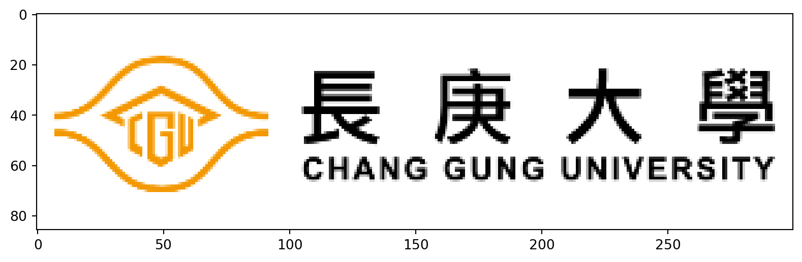

為了成功從https (加密封包傳輸)下載資料，首先取消證書驗證
pandas的read_csv(檔案路徑)功能將檔案匯入import pandas as pd
url = "https://quality.data.gov.tw//dq_download_csv.php?nid=102775&md5_url=ea56d6e1f2642b2c5c44f9e8b6185d54"
df_csv = pd.read_csv(url)
df_csv.head()| 停車場型態 | 停車場代碼 | 停車場名稱 | 停車場地址 | 停車場電話 | 即時車位 | 一般大型車 | 一般小型車 | 身障者小型車 | 婦幼者小型車 | 綠能小型車 | 一般機車 | 身障者機車 | 收費時間 | 收費費率 | 經緯度 | 備註欄 | |
|---|---|---|---|---|---|---|---|---|---|---|---|---|---|---|---|---|---|
| 0 | 公有免費停車場 | 044 | 佳里停1公有停車場 | 臺南市佳里區安西路與文化路交叉口 | 2138172 | -1 | 0 | 11 | 1 | 1 | 1 | 0 | 0 | NaN | NaN | 23.16238，120.1714 | NaN |
| 1 | 公有免費停車場 | 045 | 佳里停2公有停車場 | 臺南市佳里區文化路與公園路交叉口 | 2138172 | -1 | 0 | 8 | 1 | 1 | 1 | 0 | 0 | NaN | NaN | 23.16293，120.17216 | NaN |
| 2 | 公有免費停車場 | 100 | 停2立體停車場 | 臺南市新市區環東路1段與南科二路 | NaN | -1 | 0 | 417 | 6 | 0 | 0 | 70 | 2 | NaN | NaN | 23.096305，120.284649 | 南科管理局 |
| 3 | 公有免費停車場 | 101 | 管理局地下停車場 | 臺南市新市區環東路1段與南科三路 | NaN | -1 | 0 | 402 | 14 | 0 | 0 | 467 | 6 | NaN | NaN | 23.101229，120.282238 | 南科管理局 |
| 4 | 公有免費停車場 | 102 | 管理局戶外平面停車場 | 臺南市新市區環東路1段 | NaN | -1 | 0 | 227 | 2 | 0 | 0 | 46 | 0 | NaN | NaN | 23.102632，120.283831 | 南科管理局 |
| 停車場型態 | 停車場代碼 | 停車場名稱 | 停車場地址 | 停車場電話 | 即時車位 | 一般大型車 | 一般小型車 | 身障者小型車 | 婦幼者小型車 | 綠能小型車 | 一般機車 | 身障者機車 | 收費時間 | 收費費率 | 經緯度 | 備註欄 | |
|---|---|---|---|---|---|---|---|---|---|---|---|---|---|---|---|---|---|
| 0 | 公有免費停車場 | 044 | 佳里停1公有停車場 | 臺南市佳里區安西路與文化路交叉口 | 2138172 | -1 | 0 | 11 | 1 | 1 | 1 | 0 | 0 | NaN | NaN | 23.16238，120.1714 | NaN |
| 1 | 公有免費停車場 | 045 | 佳里停2公有停車場 | 臺南市佳里區文化路與公園路交叉口 | 2138172 | -1 | 0 | 8 | 1 | 1 | 1 | 0 | 0 | NaN | NaN | 23.16293，120.17216 | NaN |
| 2 | 公有免費停車場 | 100 | 停2立體停車場 | 臺南市新市區環東路1段與南科二路 | NaN | -1 | 0 | 417 | 6 | 0 | 0 | 70 | 2 | NaN | NaN | 23.096305，120.284649 | 南科管理局 |
| 3 | 公有免費停車場 | 101 | 管理局地下停車場 | 臺南市新市區環東路1段與南科三路 | NaN | -1 | 0 | 402 | 14 | 0 | 0 | 467 | 6 | NaN | NaN | 23.101229，120.282238 | 南科管理局 |
| 4 | 公有免費停車場 | 102 | 管理局戶外平面停車場 | 臺南市新市區環東路1段 | NaN | -1 | 0 | 227 | 2 | 0 | 0 | 46 | 0 | NaN | NaN | 23.102632，120.283831 | 南科管理局 |
csv資料下載網址read_csv()函數將檔案匯入openpyxl和xlrd套件pandas套件中的read_excel(檔案路徑)功能sheet_name參數指定工作表名稱url = 'https://github.com/CGUIM-BigDataAnalysis/BigDataCGUIM/raw/master/EMBA_BigData/Data/%E6%96%B0%E7%AB%B9%E4%B8%8D%E5%8B%95%E7%94%A2.xls'
house = pd.read_excel(url,sheet_name = "不動產買賣")
house.head()| 鄉鎮市區 | 交易標的 | 土地位置建物門牌 | 土地移轉總面積平方公尺 | 都市土地使用分區 | 非都市土地使用分區 | 非都市土地使用編定 | 交易年月日 | 交易筆棟數 | 移轉層次 | ... | 總價元 | 單價元平方公尺 | 車位類別 | 車位移轉總面積平方公尺 | 車位總價元 | 備註 | 主建物面積 | 附屬建物面積 | 陽台面積 | 電梯 | |
|---|---|---|---|---|---|---|---|---|---|---|---|---|---|---|---|---|---|---|---|---|---|
| 0 | 新竹市 | 土地 | 明湖段840地號 | 18.74 | NaN | 山坡地保育區 | 農牧用地 | 1121101 | 土地1建物0車位0 | NaN | ... | 150000 | 8004.0 | NaN | 0.0 | 0 | NaN | 0.00 | 0.0 | 0.00 | 無 |
| 1 | 新竹市 | 土地 | 新莊段198地號 | 42.95 | NaN | NaN | NaN | 1121101 | 土地12建物0車位0 | NaN | ... | 4576000 | 106542.0 | NaN | 0.0 | 0 | 親友、員工、共有人或其他特殊關係間之交易； | 0.00 | 0.0 | 0.00 | 無 |
| 2 | 新竹市 | 房地(土地+建物) | 新竹市新竹市光華街９５巷３號５樓之３ | 6.72 | 住 | NaN | NaN | 1121101 | 土地1建物1車位0 | 五層 | ... | 3630000 | 81665.0 | NaN | 0.0 | 0 | NaN | 31.62 | 0.0 | 3.74 | 有 |
| 3 | 新竹市 | 土地 | 南門段四小段177-25地號 | 29.67 | 都市：其他:道路用地 | NaN | NaN | 1121103 | 土地1建物0車位0 | NaN | ... | 1316221 | 44362.0 | NaN | 0.0 | 0 | 包含公共設施保留地用地； | 0.00 | 0.0 | 0.00 | 無 |
| 4 | 新竹市 | 土地 | 東山段一小段189-11地號 | 357.38 | NaN | NaN | NaN | 1121107 | 土地1建物0車位0 | NaN | ... | 5038989 | 14100.0 | NaN | 0.0 | 0 | 協議價購； | 0.00 | 0.0 | 0.00 | 無 |
5 rows × 31 columns
| 鄉鎮市區 | 交易標的 | 土地位置建物門牌 | 土地移轉總面積平方公尺 | 都市土地使用分區 | 非都市土地使用分區 | 非都市土地使用編定 | 交易年月日 | 交易筆棟數 | 移轉層次 | ... | 總價元 | 單價元平方公尺 | 車位類別 | 車位移轉總面積平方公尺 | 車位總價元 | 備註 | 主建物面積 | 附屬建物面積 | 陽台面積 | 電梯 | |
|---|---|---|---|---|---|---|---|---|---|---|---|---|---|---|---|---|---|---|---|---|---|
| 0 | 新竹市 | 土地 | 明湖段840地號 | 18.74 | NaN | 山坡地保育區 | 農牧用地 | 1121101 | 土地1建物0車位0 | NaN | ... | 150000 | 8004.0 | NaN | 0.0 | 0 | NaN | 0.00 | 0.0 | 0.00 | 無 |
| 1 | 新竹市 | 土地 | 新莊段198地號 | 42.95 | NaN | NaN | NaN | 1121101 | 土地12建物0車位0 | NaN | ... | 4576000 | 106542.0 | NaN | 0.0 | 0 | 親友、員工、共有人或其他特殊關係間之交易； | 0.00 | 0.0 | 0.00 | 無 |
| 2 | 新竹市 | 房地(土地+建物) | 新竹市新竹市光華街９５巷３號５樓之３ | 6.72 | 住 | NaN | NaN | 1121101 | 土地1建物1車位0 | 五層 | ... | 3630000 | 81665.0 | NaN | 0.0 | 0 | NaN | 31.62 | 0.0 | 3.74 | 有 |
| 3 | 新竹市 | 土地 | 南門段四小段177-25地號 | 29.67 | 都市：其他:道路用地 | NaN | NaN | 1121103 | 土地1建物0車位0 | NaN | ... | 1316221 | 44362.0 | NaN | 0.0 | 0 | 包含公共設施保留地用地； | 0.00 | 0.0 | 0.00 | 無 |
| 4 | 新竹市 | 土地 | 東山段一小段189-11地號 | 357.38 | NaN | NaN | NaN | 1121107 | 土地1建物0車位0 | NaN | ... | 5038989 | 14100.0 | NaN | 0.0 | 0 | 協議價購； | 0.00 | 0.0 | 0.00 | 無 |
5 rows × 31 columns
Excel資料下載網址read_excel()函數將檔案匯入，記得設定工作表名稱oepn(檔名)開啟檔案檔案物件.read()讀取內容。一次取全部，不換行檔案物件.close()關閉檔案oepn(檔名)開啟檔案檔案物件.readlines()讀取內容。一次取全部，分行存成list檔案物件.close()關閉檔案oepn(檔名)開啟檔案檔案物件.readline()讀取內容。逐行讀檔案物件.close()關閉檔案matplotlibplt.imread(圖片檔案)載入圖片，為RGB向量import matplotlib
import matplotlib.pyplot as plt
im = plt.imread('figures/cgu_logo.png')
print(im)
plt.imshow(im, 'gray')
plt.show()[[[0. 0. 0. 0.]
[0. 0. 0. 0.]
[0. 0. 0. 0.]
...
[0. 0. 0. 0.]
[0. 0. 0. 0.]
[0. 0. 0. 0.]]
[[0. 0. 0. 0.]
[0. 0. 0. 0.]
[0. 0. 0. 0.]
...
[0. 0. 0. 0.]
[0. 0. 0. 0.]
[0. 0. 0. 0.]]
[[0. 0. 0. 0.]
[0. 0. 0. 0.]
[0. 0. 0. 0.]
...
[0. 0. 0. 0.]
[0. 0. 0. 0.]
[0. 0. 0. 0.]]
...
[[0. 0. 0. 0.]
[0. 0. 0. 0.]
[0. 0. 0. 0.]
...
[0. 0. 0. 0.]
[0. 0. 0. 0.]
[0. 0. 0. 0.]]
[[0. 0. 0. 0.]
[0. 0. 0. 0.]
[0. 0. 0. 0.]
...
[0. 0. 0. 0.]
[0. 0. 0. 0.]
[0. 0. 0. 0.]]
[[0. 0. 0. 0.]
[0. 0. 0. 0.]
[0. 0. 0. 0.]
...
[0. 0. 0. 0.]
[0. 0. 0. 0.]
[0. 0. 0. 0.]]]
plt.imshow(向量)呈現圖片plt.show()在視窗中呈現圖片內容pandas套件/edit#gid=0或/edit?usp=sharing字樣，請刪除/export?format=csvgoogle-api-python-client套件link="https://docs.google.com/spreadsheets/d/1B7tTfBZ6DKIV-OH6rQEz3J1Poh928r08WqAqiIdVeqM"
csv_link="/export?format=csv"
pd.read_csv(link+csv_link)| 姓名 | 作業一 | 作業二 | 作業三 | 作業四 | Unnamed: 5 | 心得 | |
|---|---|---|---|---|---|---|---|
| 0 | 陳O孟 | O | NaN | NaN | NaN | NaN | NaN |
| 1 | 吳O蓁 | O | NaN | NaN | NaN | NaN | NaN |
| 2 | 黃O玲 | O | NaN | NaN | NaN | NaN | NaN |
| 3 | 許O源 | O | NaN | NaN | NaN | NaN | NaN |
| 4 | 郭O澄 | O | NaN | NaN | NaN | NaN | NaN |
| 5 | 丁O翰 | O | NaN | NaN | NaN | NaN | NaN |
| 6 | 黃O瑞 | O | NaN | NaN | NaN | NaN | NaN |
| 7 | 饒O禎 | O | NaN | NaN | NaN | NaN | NaN |
| 8 | 蔡O雄 | O | NaN | NaN | NaN | NaN | NaN |
| 9 | 武O頡 | O | NaN | NaN | NaN | NaN | NaN |
| 10 | 鍾O靜 | O | NaN | NaN | NaN | NaN | NaN |
| 姓名 | 作業一 | 作業二 | 作業三 | 作業四 | Unnamed: 5 | 心得 | |
|---|---|---|---|---|---|---|---|
| 0 | 陳O孟 | O | NaN | NaN | NaN | NaN | NaN |
| 1 | 吳O蓁 | O | NaN | NaN | NaN | NaN | NaN |
| 2 | 黃O玲 | O | NaN | NaN | NaN | NaN | NaN |
| 3 | 許O源 | O | NaN | NaN | NaN | NaN | NaN |
| 4 | 郭O澄 | O | NaN | NaN | NaN | NaN | NaN |
| 5 | 丁O翰 | O | NaN | NaN | NaN | NaN | NaN |
| 6 | 黃O瑞 | O | NaN | NaN | NaN | NaN | NaN |
| 7 | 饒O禎 | O | NaN | NaN | NaN | NaN | NaN |
| 8 | 蔡O雄 | O | NaN | NaN | NaN | NaN | NaN |
| 9 | 武O頡 | O | NaN | NaN | NaN | NaN | NaN |
| 10 | 鍾O靜 | O | NaN | NaN | NaN | NaN | NaN |
pd.read_csv()函數將檔案匯入CSVJSONXMLrequests套件json套件requests套件的get(網址)擷取資料params = {'param':'1'}以及headers = {'Connection':'close'}設定回傳結果.json()，將檔案轉成JSON格式探索資料，使用.keys()查看keys
探索資料，發現是dist (data)中retVal key儲存含有資料的list
[{'scity': '台中市',
'scityen': 'Taichung City',
'sna': 'YouBike2.0_綠川東中山路口',
'sarea': '中區',
'ar': '綠川東街/中山路口(東側)',
'snaen': 'YouBike2.0_Luchuan E. St. / Zhongshan Rd.',
'sareaen': 'Central Dist',
'aren': 'Luchuan E. St. & Zhongshan Rd. Intersection (East)',
'sno': '500601001',
'tot': '16',
'sbi': '12',
'mday': '20240202175318',
'lat': '24.13785',
'lng': '120.68337',
'bemp': '4',
'act': 1,
'sbi_detail': {'yb2': '12', 'eyb': '0'}},
{'scity': '台中市',
'scityen': 'Taichung City',
'sna': 'YouBike2.0_繼光光復路口',
'sarea': '中區',
'ar': '繼光街166號(對側人行道)',
'snaen': 'YouBike2.0_Jiguang St. / Guangfu Rd.',
'sareaen': 'Central Dist',
'aren': 'No.166, Jiguang St. (Opposite)',
'sno': '500601002',
'tot': '18',
'sbi': '0',
'mday': '20240202180116',
'lat': '24.1411',
'lng': '120.68474',
'bemp': '18',
'act': 1,
'sbi_detail': {'yb2': '0', 'eyb': '0'}}]探索資料，發現是dist (data)中retVal key儲存含有資料的list
{'scity': '台中市',
'scityen': 'Taichung City',
'sna': 'YouBike2.0_綠川東中山路口',
'sarea': '中區',
'ar': '綠川東街/中山路口(東側)',
'snaen': 'YouBike2.0_Luchuan E. St. / Zhongshan Rd.',
'sareaen': 'Central Dist',
'aren': 'Luchuan E. St. & Zhongshan Rd. Intersection (East)',
'sno': '500601001',
'tot': '16',
'sbi': '12',
'mday': '20240202175318',
'lat': '24.13785',
'lng': '120.68337',
'bemp': '4',
'act': 1,
'sbi_detail': {'yb2': '12', 'eyb': '0'}}requests.get()下載，.json轉型type()查看資料類別，keys()查看資料擷取方法，並印出來試試看beautifulsoup4 套件輔助需要先安裝beautifulsoup4以及requests套件。
requests套件的get(網址)函數，輸入網址，將網頁載入python分析環境。.text取得網頁原始碼 (.html)StockUrl = "https://tw.stock.yahoo.com/quote/2330"
res = requests.get(StockUrl)
res.text[0:1000] ## print first 1000 chars'<!DOCTYPE html><html id="atomic" class="NoJs desktop" lang="zh-Hant-TW"><head prefix="og: http://ogp.me/ns#"><script>window.performance && window.performance.mark && window.performance.mark(\'PageStart\');</script><meta charSet="utf-8"/><meta property="og:type" content="website"/><meta property="og:description" content="台積電(2330.TW)，Yahoo奇摩股市提供您即時報價、個股走勢、成交資訊、當日籌碼，價量變化、個股相關新聞等即時資訊。"/><meta property="og:image" content="https://s.yimg.com/cv/apiv2/social/images/yahoo_default_logo-1200x1200.png"/><meta property="og:site_name" content="Yahoo奇摩股市"/><meta property="og:title" content="台積電(2330.TW) 走勢圖 - Yahoo奇摩股市"/><meta property="og:url" content="https://tw.stock.yahoo.com/quote/2330.TW"/><meta name="oath:guce:consent-host" content="guce.yahoo.com"/><meta name="twitter:description" content="台積電(2330.TW)，Yahoo奇摩股市提供您即時報價、個股走勢、成交資訊、當日籌碼，價量變化、個股相關新聞等即時資訊。"/><meta name="twitter:image" content="https://s.yimg.com/cv/apiv2/social/images/yahoo_default_logo-1200x1200.png"/><meta name="twitter:image:sr'BeautifulSoup套件提供的解析方法BeautifulSoup(html檔案,格式)
res.text，以及設定格式"html.parser"，完成HTML解析解析後內容.prettify取得排版後的網頁原始碼find(節點條件):
<>內的內容)find_all(節點條件)
<>內的內容)select_one()
class or id等屬性)select()
class or id等屬性)範例：class 包含 Fz\(32px\)
select()
class or id等屬性).get_text()可抓取節點內文字.get("屬性名稱")可抓取屬性內容範例：class 包含 price-detail-item
select()
class or id等屬性)soup = BeautifulSoup(res.text, "html.parser")
price_detail = soup.select(".price-detail-item")
price_detail[<li class="price-detail-item H(32px) Mx(16px) D(f) Jc(sb) Ai(c) Bxz(bb) Px(0px) Py(4px) Bdbs(s) Bdbc($bd-primary-divider) Bdbw(1px)"><span class="C(#232a31) Fz(16px)--mobile Fz(14px)">成交</span><span class="Fw(600) Fz(16px)--mobile Fz(14px) D(f) Ai(c) C($c-trend-up)">635</span></li>,
<li class="price-detail-item H(32px) Mx(16px) D(f) Jc(sb) Ai(c) Bxz(bb) Px(0px) Py(4px) Bdbs(s) Bdbc($bd-primary-divider) Bdbw(1px)"><span class="C(#232a31) Fz(16px)--mobile Fz(14px)">開盤</span><span class="Fw(600) Fz(16px)--mobile Fz(14px) D(f) Ai(c) C($c-trend-up)">633</span></li>,
<li class="price-detail-item H(32px) Mx(16px) D(f) Jc(sb) Ai(c) Bxz(bb) Px(0px) Py(4px) Bdbs(s) Bdbc($bd-primary-divider) Bdbw(1px)"><span class="C(#232a31) Fz(16px)--mobile Fz(14px)">最高</span><span class="Fw(600) Fz(16px)--mobile Fz(14px) D(f) Ai(c) C($c-trend-up)">635</span></li>,
<li class="price-detail-item H(32px) Mx(16px) D(f) Jc(sb) Ai(c) Bxz(bb) Px(0px) Py(4px) Bdbs(s) Bdbc($bd-primary-divider) Bdbw(1px)"><span class="C(#232a31) Fz(16px)--mobile Fz(14px)">最低</span><span class="Fw(600) Fz(16px)--mobile Fz(14px) D(f) Ai(c)">628</span></li>,
<li class="price-detail-item H(32px) Mx(16px) D(f) Jc(sb) Ai(c) Bxz(bb) Px(0px) Py(4px) Bdbs(s) Bdbc($bd-primary-divider) Bdbw(1px)"><span class="C(#232a31) Fz(16px)--mobile Fz(14px)">均價</span><span class="Fw(600) Fz(16px)--mobile Fz(14px) D(f) Ai(c)">631</span></li>,
<li class="price-detail-item H(32px) Mx(16px) D(f) Jc(sb) Ai(c) Bxz(bb) Px(0px) Py(4px) Bdbs(s) Bdbc($bd-primary-divider) Bdbw(1px)"><span class="C(#232a31) Fz(16px)--mobile Fz(14px)">成交金額(億)</span><span class="Fw(600) Fz(16px)--mobile Fz(14px)">166.13</span></li>,
<li class="price-detail-item H(32px) Mx(16px) D(f) Jc(sb) Ai(c) Bxz(bb) Px(0px) Py(4px) Bdbs(s) Bdbc($bd-primary-divider) Bdbw(1px)"><span class="C(#232a31) Fz(16px)--mobile Fz(14px)">昨收</span><span class="Fw(600) Fz(16px)--mobile Fz(14px) D(f) Ai(c)">628</span></li>,
<li class="price-detail-item H(32px) Mx(16px) D(f) Jc(sb) Ai(c) Bxz(bb) Px(0px) Py(4px) Bdbs(s) Bdbc($bd-primary-divider) Bdbw(1px)"><span class="C(#232a31) Fz(16px)--mobile Fz(14px)">漲跌幅</span><span class="Jc(fe) Fw(600) Fz(16px)--mobile Fz(14px) D(f) Ai(c) C($c-trend-up)"><span class="Mend(4px) Bds(s)" style="border-color:transparent transparent #ff333a transparent;border-width:0 5px 7px 5px"></span>1.11%</span></li>,
<li class="price-detail-item H(32px) Mx(16px) D(f) Jc(sb) Ai(c) Bxz(bb) Px(0px) Py(4px) Bdbs(s) Bdbc($bd-primary-divider) Bdbw(1px)"><span class="C(#232a31) Fz(16px)--mobile Fz(14px)">漲跌</span><span class="Fw(600) Fz(16px)--mobile Fz(14px) D(f) Ai(c) C($c-trend-up)"><span class="Mend(4px) Bds(s)" style="border-color:transparent transparent #ff333a transparent;border-width:0 5px 7px 5px"></span>7.00</span></li>,
<li class="price-detail-item H(32px) Mx(16px) D(f) Jc(sb) Ai(c) Bxz(bb) Px(0px) Py(4px) Bdbs(s) Bdbc($bd-primary-divider) Bdbw(1px)"><span class="C(#232a31) Fz(16px)--mobile Fz(14px)">總量</span><span class="Fw(600) Fz(16px)--mobile Fz(14px)">26,293</span></li>,
<li class="price-detail-item H(32px) Mx(16px) D(f) Jc(sb) Ai(c) Bxz(bb) Px(0px) Py(4px) Bdbs(s) Bdbc($bd-primary-divider) Bdbw(1px)"><span class="C(#232a31) Fz(16px)--mobile Fz(14px)">昨量</span><span class="Fw(600) Fz(16px)--mobile Fz(14px)">44,898</span></li>,
<li class="price-detail-item H(32px) Mx(16px) D(f) Jc(sb) Ai(c) Bxz(bb) Px(0px) Py(4px) Bdbs(s) Bdbc($bd-primary-divider) Bdbw(1px)"><span class="C(#232a31) Fz(16px)--mobile Fz(14px)">振幅</span><span class="Fw(600) Fz(16px)--mobile Fz(14px)">1.11%</span></li>].get_text()可抓取節點內文字.get("屬性名稱")可抓取屬性內容範例：class 包含 StretchedBox
select(): 取得所有符合CSS條件的節點 (class or id等屬性)[<a class="Fw(b) Fz(20px) Fz(16px)--mobile Lh(23px) Lh(1.38)--mobile C($c-primary-text)! C($c-active-text)!:h LineClamp(2,46px)!--mobile LineClamp(2,46px)!--sm1024 mega-item-header-link Td(n) C(#0078ff):h C(#000) LineClamp(2,46px) LineClamp(2,38px)--sm1024 not-isInStreamVideoEnabled" href="https://tw.stock.yahoo.com/news/%E5%8F%B0%E7%A9%8D%E9%9B%BB-%E4%B8%89%E6%98%9F%E6%9C%80%E5%85%88%E9%80%B2%E8%A3%BD%E7%A8%8B%E7%95%99%E5%9C%8B%E5%85%A7-%E5%88%86%E6%9E%90%E5%B8%AB%E6%8F%AD2%E9%97%9C%E9%8D%B5-%E7%BE%8E%E5%9C%8B%E6%AF%94%E4%B8%8D%E4%B8%8A-094009448.html"><u class="StretchedBox"></u>台積電、三星最先進製程留國內 分析師揭2關鍵：美國比不上</a>,
<a class="Fw(b) Fz(20px) Fz(16px)--mobile Lh(23px) Lh(1.38)--mobile C($c-primary-text)! C($c-active-text)!:h LineClamp(2,46px)!--mobile LineClamp(2,46px)!--sm1024 mega-item-header-link Td(n) C(#0078ff):h C(#000) LineClamp(2,46px) LineClamp(2,38px)--sm1024 not-isInStreamVideoEnabled" href="https://tw.stock.yahoo.com/news/tbmc%E8%B7%A8%E6%96%B0%E9%87%8C%E7%A8%8B%E7%A2%91-%E9%BE%94%E6%98%8E%E9%91%AB-%E7%94%9F%E9%86%AB%E7%94%A2%E6%A5%AD%E6%8B%BC%E5%AE%8C%E6%9C%80%E5%BE%8C-%E5%A1%8A%E6%8B%BC%E5%9C%96-090126936.html"><u class="StretchedBox"></u>TBMC跨新里程碑 龔明鑫：生醫產業拼完最後一塊拼圖</a>,
<a class="Fw(b) Fz(20px) Fz(16px)--mobile Lh(23px) Lh(1.38)--mobile C($c-primary-text)! C($c-active-text)!:h LineClamp(2,46px)!--mobile LineClamp(2,46px)!--sm1024 mega-item-header-link Td(n) C(#0078ff):h C(#000) LineClamp(2,46px) LineClamp(2,38px)--sm1024 not-isInStreamVideoEnabled" href="https://tw.stock.yahoo.com/news/%E5%85%AC%E5%91%8A-%E5%8F%B0%E7%A9%8D%E9%9B%BB%E4%BB%A3%E5%AD%90%E5%85%AC%E5%8F%B8-tsmc-global-ltd-081737114.html"><u class="StretchedBox"></u>【公告】台積電代子公司 TSMC Global Ltd. 取得固定收益證券</a>,
<a class="Fw(b) Fz(20px) Fz(16px)--mobile Lh(23px) Lh(1.38)--mobile C($c-primary-text)! C($c-active-text)!:h LineClamp(2,46px)!--mobile LineClamp(2,46px)!--sm1024 mega-item-header-link Td(n) C(#0078ff):h C(#000) LineClamp(2,46px) LineClamp(2,38px)--sm1024 not-isInStreamVideoEnabled" href="https://tw.stock.yahoo.com/news/%E5%8D%8A%E5%B0%8E%E9%AB%94-%E5%89%B5%E6%84%8F%E8%80%81%E5%AF%A6%E8%AA%AA-%E6%88%B4%E5%B0%9A%E7%BE%A9-2024%E6%88%90%E9%95%B7%E5%B9%85%E5%BA%A6%E5%B0%87%E8%90%BD%E5%BE%8C%E5%8F%B0%E7%A9%8D%E9%9B%BB-073825537.html"><u class="StretchedBox"></u>《半導體》創意老實說！戴尚義：2024成長幅度將落後台積電</a>,
<a class="Fw(b) Fz(20px) Fz(16px)--mobile Lh(23px) Lh(1.38)--mobile C($c-primary-text)! C($c-active-text)!:h LineClamp(2,46px)!--mobile LineClamp(2,46px)!--sm1024 mega-item-header-link Td(n) C(#0078ff):h C(#000) LineClamp(2,46px) LineClamp(2,38px)--sm1024 not-isInStreamVideoEnabled" href="https://tw.stock.yahoo.com/news/%E6%8A%95%E8%B3%87%E9%9B%B7%E9%81%94-%E6%8A%95%E8%B3%87%E9%80%81%E5%88%86%E9%A1%8C-%E6%8A%95%E7%AD%89%E5%82%B5%E9%80%99%E6%A8%A3%E8%B2%B7-061452172.html"><u class="StretchedBox"></u>投資雷達》投資送分題？投等債這樣買</a>,
<a class="Fw(b) Fz(20px) Fz(16px)--mobile Lh(23px) Lh(1.38)--mobile C($c-primary-text)! C($c-active-text)!:h LineClamp(2,46px)!--mobile LineClamp(2,46px)!--sm1024 mega-item-header-link Td(n) C(#0078ff):h C(#000) LineClamp(2,46px) LineClamp(2,38px)--sm1024 not-isInStreamVideoEnabled" href="https://tw.stock.yahoo.com/news/%E5%8F%B0%E7%A9%8D%E9%9B%BBai%E6%93%BA%E5%B0%BE-%E5%8F%B0%E8%82%A1%E6%94%B6%E6%BC%B291-82%E9%BB%9E%E7%AB%99%E7%A9%A9%E8%90%AC%E5%85%AB-054900317.html"><u class="StretchedBox"></u>台積電AI擺尾 台股收漲91.82點站穩萬八</a>,
<a class="Fw(b) Fz(20px) Fz(16px)--mobile Lh(23px) Lh(1.38)--mobile C($c-primary-text)! C($c-active-text)!:h LineClamp(2,46px)!--mobile LineClamp(2,46px)!--sm1024 mega-item-header-link Td(n) C(#0078ff):h C(#000) LineClamp(2,46px) LineClamp(2,38px)--sm1024 not-isInStreamVideoEnabled" href="https://tw.stock.yahoo.com/news/sk%E6%B5%B7%E5%8A%9B%E5%A3%AB%E8%B5%B4%E7%BE%8E%E9%80%A0%E5%85%88%E9%80%B2%E5%B0%81%E8%A3%9D%E5%BB%A0-%E7%BE%8E%E5%AE%98%E5%93%A1-%E9%99%8D%E5%B0%8D%E5%8F%B0%E4%BE%9D%E8%B3%B4-044800645.html"><u class="StretchedBox"></u>SK海力士赴美造先進封裝廠 美官員：降對台依賴</a>,
<a class="Fw(b) Fz(20px) Fz(16px)--mobile Lh(23px) Lh(1.38)--mobile C($c-primary-text)! C($c-active-text)!:h LineClamp(2,46px)!--mobile LineClamp(2,46px)!--sm1024 mega-item-header-link Td(n) C(#0078ff):h C(#000) LineClamp(2,46px) LineClamp(2,38px)--sm1024 not-isInStreamVideoEnabled" href="https://tw.stock.yahoo.com/news/%E5%8F%B0%E7%BE%8E%E7%94%9F%E6%8A%80%E7%B5%90%E7%9B%9F-tbmc%E6%94%9C%E6%89%8B%E7%BE%8E%E5%9C%8B%E9%9F%8C%E5%8A%9B%E7%AD%96%E7%95%A5%E7%B5%90%E7%9B%9F-%E5%8F%96%E5%BE%97%E4%BA%94%E5%A4%A7%E5%85%88%E9%80%B2%E8%A3%BD%E7%A8%8B%E6%8A%80%E8%A1%93-044021930.html"><u class="StretchedBox"></u>〈台美生技結盟〉TBMC攜手美國韌力策略結盟 取得五大先進製程技術</a>,
<a class="Fw(b) Fz(20px) Fz(16px)--mobile Lh(23px) Lh(1.38)--mobile C($c-primary-text)! C($c-active-text)!:h LineClamp(2,46px)!--mobile LineClamp(2,46px)!--sm1024 mega-item-header-link Td(n) C(#0078ff):h C(#000) LineClamp(2,46px) LineClamp(2,38px)--sm1024 not-isInStreamVideoEnabled" href="https://tw.stock.yahoo.com/news/%E5%8F%B0%E7%A9%8D%E9%9B%BB%E6%95%88%E6%87%89-%E5%8F%B0%E5%8D%97%E8%A3%BD%E9%80%A0%E6%A5%AD%E6%B1%82%E6%89%8D%E4%BA%BA%E6%95%B8%E5%85%A8%E5%8F%B0%E7%AC%AC-021049977.html"><u class="StretchedBox"></u>台積電效應 台南製造業求才人數全台第一</a>,
<a class="Fw(b) Fz(20px) Fz(16px)--mobile Lh(23px) Lh(1.38)--mobile C($c-primary-text)! C($c-active-text)!:h LineClamp(2,46px)!--mobile LineClamp(2,46px)!--sm1024 mega-item-header-link Td(n) C(#0078ff):h C(#000) LineClamp(2,46px) LineClamp(2,38px)--sm1024 not-isInStreamVideoEnabled" href="https://tw.stock.yahoo.com/news/%E5%8F%B0%E5%8C%97%E8%82%A1%E5%B8%82-%E5%8F%B0%E7%A9%8D%E9%9B%BB%E9%96%8B%E9%AB%98-ai%E5%8A%A9%E6%94%BB-%E5%8F%B0%E8%82%A1%E9%87%8D%E7%99%BB%E8%90%AC%E5%85%AB-011308676.html"><u class="StretchedBox"></u>《台北股市》台積電開高 AI助攻 台股重登萬八</a>,
<a class="Fw(b) Fz(20px) Fz(16px)--mobile Lh(23px) Lh(1.38)--mobile C($c-primary-text)! C($c-active-text)!:h LineClamp(2,46px)!--mobile LineClamp(2,46px)!--sm1024 mega-item-header-link Td(n) C(#0078ff):h C(#000) LineClamp(2,46px) LineClamp(2,38px)--sm1024 not-isInStreamVideoEnabled" href="https://tw.stock.yahoo.com/news/%E5%8F%B0%E7%A9%8D%E9%9B%BB%E5%8B%81%E6%8F%9A5%E5%85%83%E8%87%B3633%E5%85%83-%E5%8F%B0%E8%82%A1%E6%BC%B290%E9%BB%9E%E6%94%B6%E5%BE%A9%E8%90%AC%E5%85%AB%E5%A4%A7%E9%97%9C-010147776.html"><u class="StretchedBox"></u>台積電勁揚5元至633元 台股漲90點收復萬八大關</a>,
<a class="Fw(b) Fz(20px) Fz(16px)--mobile Lh(23px) Lh(1.38)--mobile C($c-primary-text)! C($c-active-text)!:h LineClamp(2,46px)!--mobile LineClamp(2,46px)!--sm1024 mega-item-header-link Td(n) C(#0078ff):h C(#000) LineClamp(2,46px) LineClamp(2,38px)--sm1024 not-isInStreamVideoEnabled" href="https://tw.stock.yahoo.com/news/1%E5%88%86%E9%90%98%E8%AE%80%E8%B2%A1%E7%B6%93-%E8%AE%8A%E5%BF%83-%E6%94%BF%E5%BA%9C%E5%9F%BA%E9%87%91%E7%A0%8D%E5%8F%B0%E7%A9%8D%E9%9B%BB%E6%8C%81%E8%82%A1-%E5%8A%A0%E7%A2%BC%E6%9C%80%E6%9C%89%E6%BD%9B%E5%8A%9B%E5%A4%A9%E7%8E%8B%E8%82%A1-003523722.html"><u class="StretchedBox"></u>1分鐘讀財經》變心？政府基金砍台積電持股 加碼最有潛力天王股</a>,
<a class="Fw(b) Fz(20px) Fz(16px)--mobile Lh(23px) Lh(1.38)--mobile C($c-primary-text)! C($c-active-text)!:h LineClamp(2,46px)!--mobile LineClamp(2,46px)!--sm1024 mega-item-header-link Td(n) C(#0078ff):h C(#000) LineClamp(2,46px) LineClamp(2,38px)--sm1024 not-isInStreamVideoEnabled" href="https://tw.stock.yahoo.com/news/%E9%9B%BB%E9%80%9A%E8%82%A1-%E5%B4%87%E8%B6%8A%E6%93%AC%E6%8A%95%E8%B3%87%E6%8D%B7%E5%85%8B-%E8%A8%AD%E6%AD%90%E6%B4%B2%E6%93%9A%E9%BB%9E-235511322.html"><u class="StretchedBox"></u>《電通股》崇越擬投資捷克 設歐洲據點</a>,
<a class="Fw(b) Fz(20px) Fz(16px)--mobile Lh(23px) Lh(1.38)--mobile C($c-primary-text)! C($c-active-text)!:h LineClamp(2,46px)!--mobile LineClamp(2,46px)!--sm1024 mega-item-header-link Td(n) C(#0078ff):h C(#000) LineClamp(2,46px) LineClamp(2,38px)--sm1024 not-isInStreamVideoEnabled" href="https://tw.stock.yahoo.com/news/%E5%8F%B0%E7%A9%8D%E9%9B%BBadr1%E6%97%A5%E4%B8%8A%E6%BC%B20-43%E7%BE%8E%E5%85%83%E6%BC%B2%E5%B9%850-38-%E6%8A%98%E5%8F%B0%E8%82%A1710-68%E5%85%83-222617982.html"><u class="StretchedBox"></u>台積電ADR1日上漲0.43美元漲幅0.38%折台股710.68元</a>,
<a class="Fw(b) Fz(20px) Fz(16px)--mobile Lh(23px) Lh(1.38)--mobile C($c-primary-text)! C($c-active-text)!:h LineClamp(2,46px)!--mobile LineClamp(2,46px)!--sm1024 mega-item-header-link Td(n) C(#0078ff):h C(#000) LineClamp(2,46px) LineClamp(2,38px)--sm1024 not-isInStreamVideoEnabled" href="https://tw.stock.yahoo.com/news/%E6%93%BA%E8%84%AB%E8%81%AF%E6%BA%96%E6%9C%83%E6%94%BE%E9%B7%B9%E8%B3%A3%E5%A3%93-%E7%BE%8E%E8%82%A1%E9%81%93%E7%93%8A%E6%94%B6%E9%AB%98369%E9%BB%9E-%E5%8F%B0%E7%A9%8D%E9%9B%BBadr%E6%BC%B20-38-221133750.html"><u class="StretchedBox"></u>擺脫聯準會放鷹賣壓！美股道瓊收高369點 台積電ADR漲0.38％</a>,
<a class="Fw(b) Fz(20px) Fz(16px)--mobile Lh(23px) Lh(1.38)--mobile C($c-primary-text)! C($c-active-text)!:h LineClamp(2,46px)!--mobile LineClamp(2,46px)!--sm1024 mega-item-header-link Td(n) C(#0078ff):h C(#000) LineClamp(2,46px) LineClamp(2,38px)--sm1024 not-isInStreamVideoEnabled" href="https://tw.stock.yahoo.com/news/%E5%B4%87%E8%B6%8A%E6%93%AC%E6%8A%95%E8%B3%87%E6%8D%B7%E5%85%8B-%E8%A8%AD%E6%AD%90%E6%B4%B2%E6%93%9A%E9%BB%9E-201000081.html"><u class="StretchedBox"></u>崇越擬投資捷克 設歐洲據點</a>,
<a class="Fw(b) Fz(20px) Fz(16px)--mobile Lh(23px) Lh(1.38)--mobile C($c-primary-text)! C($c-active-text)!:h LineClamp(2,46px)!--mobile LineClamp(2,46px)!--sm1024 mega-item-header-link Td(n) C(#0078ff):h C(#000) LineClamp(2,46px) LineClamp(2,38px)--sm1024 not-isInStreamVideoEnabled" href="https://tw.stock.yahoo.com/news/%E6%97%A5%E6%9C%88%E5%85%89%E6%8A%95%E6%8E%A7%E5%85%88%E9%80%B2%E5%B0%81%E8%A3%9D%E5%90%88%E4%BD%9C%E5%8F%B0%E7%A9%8D%E9%9B%BB-%E8%B3%87%E6%9C%AC%E6%94%AF%E5%87%BA%E6%93%B44%E8%87%B35%E6%88%90-092029540.html"><u class="StretchedBox"></u>日月光投控先進封裝合作台積電 資本支出擴4至5成</a>,
<a class="Fw(b) Fz(20px) Fz(16px)--mobile Lh(23px) Lh(1.38)--mobile C($c-primary-text)! C($c-active-text)!:h LineClamp(2,46px)!--mobile LineClamp(2,46px)!--sm1024 mega-item-header-link Td(n) C(#0078ff):h C(#000) LineClamp(2,46px) LineClamp(2,38px)--sm1024 not-isInStreamVideoEnabled" href="https://tw.stock.yahoo.com/news/%E8%8B%A5%E5%A4%B1%E5%8E%BB%E5%8F%B0%E7%81%A3%E6%99%B6%E7%89%87%E6%9C%89%E5%A4%9A%E6%81%90%E6%80%96-%E7%BE%8E%E5%95%86%E7%95%8C%E9%A9%9A%E5%9A%87-%E9%80%994%E5%AE%B6%E5%85%AC%E5%8F%B8%E5%85%A8%E7%99%B1%E7%98%93-083009321.html"><u class="StretchedBox"></u>若失去台灣晶片有多恐怖？美商界驚嚇：這4家公司全癱瘓</a>,
<a class="Fw(b) Fz(20px) Fz(16px)--mobile Lh(23px) Lh(1.38)--mobile C($c-primary-text)! C($c-active-text)!:h LineClamp(2,46px)!--mobile LineClamp(2,46px)!--sm1024 mega-item-header-link Td(n) C(#0078ff):h C(#000) LineClamp(2,46px) LineClamp(2,38px)--sm1024 not-isInStreamVideoEnabled" href="https://tw.stock.yahoo.com/news/%E5%8F%B0%E7%A9%8D%E9%9B%BB%E5%B0%BE%E7%9B%A4%E6%80%A5%E6%8B%89%E6%94%B6%E5%B9%B3-%E5%8F%B0%E8%82%A1%E8%B6%8A%E9%81%8E17900%E9%BB%9E-055153037.html"><u class="StretchedBox"></u>台積電尾盤急拉收平 台股越過17900點</a>,
<a class="Fw(b) Fz(20px) Fz(16px)--mobile Lh(23px) Lh(1.38)--mobile C($c-primary-text)! C($c-active-text)!:h LineClamp(2,46px)!--mobile LineClamp(2,46px)!--sm1024 mega-item-header-link Td(n) C(#0078ff):h C(#000) LineClamp(2,46px) LineClamp(2,38px)--sm1024 not-isInStreamVideoEnabled" href="https://tw.stock.yahoo.com/news/dj%E5%9C%A8%E7%B7%9A-%E8%AD%B7%E5%9C%8B%E7%A5%9E%E5%B1%B1%E5%B8%B6%E6%97%BA%E7%92%B0%E5%B7%A5%E6%A5%AD-%E5%9C%9F%E6%B0%B4%E7%9B%B8%E9%97%9C%E9%83%BD%E5%8F%97%E6%83%A0-050600539.html"><u class="StretchedBox"></u>《DJ在線》護國神山帶旺環工業，土水相關都受惠</a>].get_text()可抓取節點內文字.get("屬性名稱")可抓取屬性內容台積電、三星最先進製程留國內 分析師揭2關鍵：美國比不上
TBMC跨新里程碑 龔明鑫：生醫產業拼完最後一塊拼圖
【公告】台積電代子公司 TSMC Global Ltd. 取得固定收益證券
《半導體》創意老實說！戴尚義：2024成長幅度將落後台積電
投資雷達》投資送分題？投等債這樣買
台積電AI擺尾 台股收漲91.82點站穩萬八
SK海力士赴美造先進封裝廠 美官員：降對台依賴
〈台美生技結盟〉TBMC攜手美國韌力策略結盟 取得五大先進製程技術
台積電效應 台南製造業求才人數全台第一
《台北股市》台積電開高 AI助攻 台股重登萬八
台積電勁揚5元至633元 台股漲90點收復萬八大關
1分鐘讀財經》變心？政府基金砍台積電持股 加碼最有潛力天王股
《電通股》崇越擬投資捷克 設歐洲據點
台積電ADR1日上漲0.43美元漲幅0.38%折台股710.68元
擺脫聯準會放鷹賣壓！美股道瓊收高369點 台積電ADR漲0.38％
崇越擬投資捷克 設歐洲據點
日月光投控先進封裝合作台積電 資本支出擴4至5成
若失去台灣晶片有多恐怖？美商界驚嚇：這4家公司全癱瘓
台積電尾盤急拉收平 台股越過17900點
《DJ在線》護國神山帶旺環工業，土水相關都受惠requests.get(網址)BeautifulSoup(下載網頁.text, "html.parser")find(節點), select(css條件)get_text(), get(屬性名稱).get_text()可抓取節點內文字.get("屬性名稱")可抓取屬性內容https://tw.stock.yahoo.com/news/%E5%8F%B0%E7%A9%8D%E9%9B%BB-%E4%B8%89%E6%98%9F%E6%9C%80%E5%85%88%E9%80%B2%E8%A3%BD%E7%A8%8B%E7%95%99%E5%9C%8B%E5%85%A7-%E5%88%86%E6%9E%90%E5%B8%AB%E6%8F%AD2%E9%97%9C%E9%8D%B5-%E7%BE%8E%E5%9C%8B%E6%AF%94%E4%B8%8D%E4%B8%8A-094009448.html
https://tw.stock.yahoo.com/news/tbmc%E8%B7%A8%E6%96%B0%E9%87%8C%E7%A8%8B%E7%A2%91-%E9%BE%94%E6%98%8E%E9%91%AB-%E7%94%9F%E9%86%AB%E7%94%A2%E6%A5%AD%E6%8B%BC%E5%AE%8C%E6%9C%80%E5%BE%8C-%E5%A1%8A%E6%8B%BC%E5%9C%96-090126936.html
https://tw.stock.yahoo.com/news/%E5%85%AC%E5%91%8A-%E5%8F%B0%E7%A9%8D%E9%9B%BB%E4%BB%A3%E5%AD%90%E5%85%AC%E5%8F%B8-tsmc-global-ltd-081737114.html
https://tw.stock.yahoo.com/news/%E5%8D%8A%E5%B0%8E%E9%AB%94-%E5%89%B5%E6%84%8F%E8%80%81%E5%AF%A6%E8%AA%AA-%E6%88%B4%E5%B0%9A%E7%BE%A9-2024%E6%88%90%E9%95%B7%E5%B9%85%E5%BA%A6%E5%B0%87%E8%90%BD%E5%BE%8C%E5%8F%B0%E7%A9%8D%E9%9B%BB-073825537.html
https://tw.stock.yahoo.com/news/%E6%8A%95%E8%B3%87%E9%9B%B7%E9%81%94-%E6%8A%95%E8%B3%87%E9%80%81%E5%88%86%E9%A1%8C-%E6%8A%95%E7%AD%89%E5%82%B5%E9%80%99%E6%A8%A3%E8%B2%B7-061452172.html
https://tw.stock.yahoo.com/news/%E5%8F%B0%E7%A9%8D%E9%9B%BBai%E6%93%BA%E5%B0%BE-%E5%8F%B0%E8%82%A1%E6%94%B6%E6%BC%B291-82%E9%BB%9E%E7%AB%99%E7%A9%A9%E8%90%AC%E5%85%AB-054900317.html
https://tw.stock.yahoo.com/news/sk%E6%B5%B7%E5%8A%9B%E5%A3%AB%E8%B5%B4%E7%BE%8E%E9%80%A0%E5%85%88%E9%80%B2%E5%B0%81%E8%A3%9D%E5%BB%A0-%E7%BE%8E%E5%AE%98%E5%93%A1-%E9%99%8D%E5%B0%8D%E5%8F%B0%E4%BE%9D%E8%B3%B4-044800645.html
https://tw.stock.yahoo.com/news/%E5%8F%B0%E7%BE%8E%E7%94%9F%E6%8A%80%E7%B5%90%E7%9B%9F-tbmc%E6%94%9C%E6%89%8B%E7%BE%8E%E5%9C%8B%E9%9F%8C%E5%8A%9B%E7%AD%96%E7%95%A5%E7%B5%90%E7%9B%9F-%E5%8F%96%E5%BE%97%E4%BA%94%E5%A4%A7%E5%85%88%E9%80%B2%E8%A3%BD%E7%A8%8B%E6%8A%80%E8%A1%93-044021930.html
https://tw.stock.yahoo.com/news/%E5%8F%B0%E7%A9%8D%E9%9B%BB%E6%95%88%E6%87%89-%E5%8F%B0%E5%8D%97%E8%A3%BD%E9%80%A0%E6%A5%AD%E6%B1%82%E6%89%8D%E4%BA%BA%E6%95%B8%E5%85%A8%E5%8F%B0%E7%AC%AC-021049977.html
https://tw.stock.yahoo.com/news/%E5%8F%B0%E5%8C%97%E8%82%A1%E5%B8%82-%E5%8F%B0%E7%A9%8D%E9%9B%BB%E9%96%8B%E9%AB%98-ai%E5%8A%A9%E6%94%BB-%E5%8F%B0%E8%82%A1%E9%87%8D%E7%99%BB%E8%90%AC%E5%85%AB-011308676.html
https://tw.stock.yahoo.com/news/%E5%8F%B0%E7%A9%8D%E9%9B%BB%E5%8B%81%E6%8F%9A5%E5%85%83%E8%87%B3633%E5%85%83-%E5%8F%B0%E8%82%A1%E6%BC%B290%E9%BB%9E%E6%94%B6%E5%BE%A9%E8%90%AC%E5%85%AB%E5%A4%A7%E9%97%9C-010147776.html
https://tw.stock.yahoo.com/news/1%E5%88%86%E9%90%98%E8%AE%80%E8%B2%A1%E7%B6%93-%E8%AE%8A%E5%BF%83-%E6%94%BF%E5%BA%9C%E5%9F%BA%E9%87%91%E7%A0%8D%E5%8F%B0%E7%A9%8D%E9%9B%BB%E6%8C%81%E8%82%A1-%E5%8A%A0%E7%A2%BC%E6%9C%80%E6%9C%89%E6%BD%9B%E5%8A%9B%E5%A4%A9%E7%8E%8B%E8%82%A1-003523722.html
https://tw.stock.yahoo.com/news/%E9%9B%BB%E9%80%9A%E8%82%A1-%E5%B4%87%E8%B6%8A%E6%93%AC%E6%8A%95%E8%B3%87%E6%8D%B7%E5%85%8B-%E8%A8%AD%E6%AD%90%E6%B4%B2%E6%93%9A%E9%BB%9E-235511322.html
https://tw.stock.yahoo.com/news/%E5%8F%B0%E7%A9%8D%E9%9B%BBadr1%E6%97%A5%E4%B8%8A%E6%BC%B20-43%E7%BE%8E%E5%85%83%E6%BC%B2%E5%B9%850-38-%E6%8A%98%E5%8F%B0%E8%82%A1710-68%E5%85%83-222617982.html
https://tw.stock.yahoo.com/news/%E6%93%BA%E8%84%AB%E8%81%AF%E6%BA%96%E6%9C%83%E6%94%BE%E9%B7%B9%E8%B3%A3%E5%A3%93-%E7%BE%8E%E8%82%A1%E9%81%93%E7%93%8A%E6%94%B6%E9%AB%98369%E9%BB%9E-%E5%8F%B0%E7%A9%8D%E9%9B%BBadr%E6%BC%B20-38-221133750.html
https://tw.stock.yahoo.com/news/%E5%B4%87%E8%B6%8A%E6%93%AC%E6%8A%95%E8%B3%87%E6%8D%B7%E5%85%8B-%E8%A8%AD%E6%AD%90%E6%B4%B2%E6%93%9A%E9%BB%9E-201000081.html
https://tw.stock.yahoo.com/news/%E6%97%A5%E6%9C%88%E5%85%89%E6%8A%95%E6%8E%A7%E5%85%88%E9%80%B2%E5%B0%81%E8%A3%9D%E5%90%88%E4%BD%9C%E5%8F%B0%E7%A9%8D%E9%9B%BB-%E8%B3%87%E6%9C%AC%E6%94%AF%E5%87%BA%E6%93%B44%E8%87%B35%E6%88%90-092029540.html
https://tw.stock.yahoo.com/news/%E8%8B%A5%E5%A4%B1%E5%8E%BB%E5%8F%B0%E7%81%A3%E6%99%B6%E7%89%87%E6%9C%89%E5%A4%9A%E6%81%90%E6%80%96-%E7%BE%8E%E5%95%86%E7%95%8C%E9%A9%9A%E5%9A%87-%E9%80%994%E5%AE%B6%E5%85%AC%E5%8F%B8%E5%85%A8%E7%99%B1%E7%98%93-083009321.html
https://tw.stock.yahoo.com/news/%E5%8F%B0%E7%A9%8D%E9%9B%BB%E5%B0%BE%E7%9B%A4%E6%80%A5%E6%8B%89%E6%94%B6%E5%B9%B3-%E5%8F%B0%E8%82%A1%E8%B6%8A%E9%81%8E17900%E9%BB%9E-055153037.html
https://tw.stock.yahoo.com/news/dj%E5%9C%A8%E7%B7%9A-%E8%AD%B7%E5%9C%8B%E7%A5%9E%E5%B1%B1%E5%B8%B6%E6%97%BA%E7%92%B0%E5%B7%A5%E6%A5%AD-%E5%9C%9F%E6%B0%B4%E7%9B%B8%E9%97%9C%E9%83%BD%E5%8F%97%E6%83%A0-050600539.htmlrequests.get(網址)BeautifulSoup(下載網頁.text, "html.parser")find(節點), select(css條件)get_text(), get(屬性名稱)首先取得連結list。
補充內容：
sequence物件.append()可新增內容至sequence中url_list = []
title_list = []
for title_click in news:
url_list.append(title_click.get("href"))
title_list.append(title_click.get_text())
print(url_list)['https://tw.stock.yahoo.com/news/%E5%8F%B0%E7%A9%8D%E9%9B%BB-%E4%B8%89%E6%98%9F%E6%9C%80%E5%85%88%E9%80%B2%E8%A3%BD%E7%A8%8B%E7%95%99%E5%9C%8B%E5%85%A7-%E5%88%86%E6%9E%90%E5%B8%AB%E6%8F%AD2%E9%97%9C%E9%8D%B5-%E7%BE%8E%E5%9C%8B%E6%AF%94%E4%B8%8D%E4%B8%8A-094009448.html', 'https://tw.stock.yahoo.com/news/tbmc%E8%B7%A8%E6%96%B0%E9%87%8C%E7%A8%8B%E7%A2%91-%E9%BE%94%E6%98%8E%E9%91%AB-%E7%94%9F%E9%86%AB%E7%94%A2%E6%A5%AD%E6%8B%BC%E5%AE%8C%E6%9C%80%E5%BE%8C-%E5%A1%8A%E6%8B%BC%E5%9C%96-090126936.html', 'https://tw.stock.yahoo.com/news/%E5%85%AC%E5%91%8A-%E5%8F%B0%E7%A9%8D%E9%9B%BB%E4%BB%A3%E5%AD%90%E5%85%AC%E5%8F%B8-tsmc-global-ltd-081737114.html', 'https://tw.stock.yahoo.com/news/%E5%8D%8A%E5%B0%8E%E9%AB%94-%E5%89%B5%E6%84%8F%E8%80%81%E5%AF%A6%E8%AA%AA-%E6%88%B4%E5%B0%9A%E7%BE%A9-2024%E6%88%90%E9%95%B7%E5%B9%85%E5%BA%A6%E5%B0%87%E8%90%BD%E5%BE%8C%E5%8F%B0%E7%A9%8D%E9%9B%BB-073825537.html', 'https://tw.stock.yahoo.com/news/%E6%8A%95%E8%B3%87%E9%9B%B7%E9%81%94-%E6%8A%95%E8%B3%87%E9%80%81%E5%88%86%E9%A1%8C-%E6%8A%95%E7%AD%89%E5%82%B5%E9%80%99%E6%A8%A3%E8%B2%B7-061452172.html', 'https://tw.stock.yahoo.com/news/%E5%8F%B0%E7%A9%8D%E9%9B%BBai%E6%93%BA%E5%B0%BE-%E5%8F%B0%E8%82%A1%E6%94%B6%E6%BC%B291-82%E9%BB%9E%E7%AB%99%E7%A9%A9%E8%90%AC%E5%85%AB-054900317.html', 'https://tw.stock.yahoo.com/news/sk%E6%B5%B7%E5%8A%9B%E5%A3%AB%E8%B5%B4%E7%BE%8E%E9%80%A0%E5%85%88%E9%80%B2%E5%B0%81%E8%A3%9D%E5%BB%A0-%E7%BE%8E%E5%AE%98%E5%93%A1-%E9%99%8D%E5%B0%8D%E5%8F%B0%E4%BE%9D%E8%B3%B4-044800645.html', 'https://tw.stock.yahoo.com/news/%E5%8F%B0%E7%BE%8E%E7%94%9F%E6%8A%80%E7%B5%90%E7%9B%9F-tbmc%E6%94%9C%E6%89%8B%E7%BE%8E%E5%9C%8B%E9%9F%8C%E5%8A%9B%E7%AD%96%E7%95%A5%E7%B5%90%E7%9B%9F-%E5%8F%96%E5%BE%97%E4%BA%94%E5%A4%A7%E5%85%88%E9%80%B2%E8%A3%BD%E7%A8%8B%E6%8A%80%E8%A1%93-044021930.html', 'https://tw.stock.yahoo.com/news/%E5%8F%B0%E7%A9%8D%E9%9B%BB%E6%95%88%E6%87%89-%E5%8F%B0%E5%8D%97%E8%A3%BD%E9%80%A0%E6%A5%AD%E6%B1%82%E6%89%8D%E4%BA%BA%E6%95%B8%E5%85%A8%E5%8F%B0%E7%AC%AC-021049977.html', 'https://tw.stock.yahoo.com/news/%E5%8F%B0%E5%8C%97%E8%82%A1%E5%B8%82-%E5%8F%B0%E7%A9%8D%E9%9B%BB%E9%96%8B%E9%AB%98-ai%E5%8A%A9%E6%94%BB-%E5%8F%B0%E8%82%A1%E9%87%8D%E7%99%BB%E8%90%AC%E5%85%AB-011308676.html', 'https://tw.stock.yahoo.com/news/%E5%8F%B0%E7%A9%8D%E9%9B%BB%E5%8B%81%E6%8F%9A5%E5%85%83%E8%87%B3633%E5%85%83-%E5%8F%B0%E8%82%A1%E6%BC%B290%E9%BB%9E%E6%94%B6%E5%BE%A9%E8%90%AC%E5%85%AB%E5%A4%A7%E9%97%9C-010147776.html', 'https://tw.stock.yahoo.com/news/1%E5%88%86%E9%90%98%E8%AE%80%E8%B2%A1%E7%B6%93-%E8%AE%8A%E5%BF%83-%E6%94%BF%E5%BA%9C%E5%9F%BA%E9%87%91%E7%A0%8D%E5%8F%B0%E7%A9%8D%E9%9B%BB%E6%8C%81%E8%82%A1-%E5%8A%A0%E7%A2%BC%E6%9C%80%E6%9C%89%E6%BD%9B%E5%8A%9B%E5%A4%A9%E7%8E%8B%E8%82%A1-003523722.html', 'https://tw.stock.yahoo.com/news/%E9%9B%BB%E9%80%9A%E8%82%A1-%E5%B4%87%E8%B6%8A%E6%93%AC%E6%8A%95%E8%B3%87%E6%8D%B7%E5%85%8B-%E8%A8%AD%E6%AD%90%E6%B4%B2%E6%93%9A%E9%BB%9E-235511322.html', 'https://tw.stock.yahoo.com/news/%E5%8F%B0%E7%A9%8D%E9%9B%BBadr1%E6%97%A5%E4%B8%8A%E6%BC%B20-43%E7%BE%8E%E5%85%83%E6%BC%B2%E5%B9%850-38-%E6%8A%98%E5%8F%B0%E8%82%A1710-68%E5%85%83-222617982.html', 'https://tw.stock.yahoo.com/news/%E6%93%BA%E8%84%AB%E8%81%AF%E6%BA%96%E6%9C%83%E6%94%BE%E9%B7%B9%E8%B3%A3%E5%A3%93-%E7%BE%8E%E8%82%A1%E9%81%93%E7%93%8A%E6%94%B6%E9%AB%98369%E9%BB%9E-%E5%8F%B0%E7%A9%8D%E9%9B%BBadr%E6%BC%B20-38-221133750.html', 'https://tw.stock.yahoo.com/news/%E5%B4%87%E8%B6%8A%E6%93%AC%E6%8A%95%E8%B3%87%E6%8D%B7%E5%85%8B-%E8%A8%AD%E6%AD%90%E6%B4%B2%E6%93%9A%E9%BB%9E-201000081.html', 'https://tw.stock.yahoo.com/news/%E6%97%A5%E6%9C%88%E5%85%89%E6%8A%95%E6%8E%A7%E5%85%88%E9%80%B2%E5%B0%81%E8%A3%9D%E5%90%88%E4%BD%9C%E5%8F%B0%E7%A9%8D%E9%9B%BB-%E8%B3%87%E6%9C%AC%E6%94%AF%E5%87%BA%E6%93%B44%E8%87%B35%E6%88%90-092029540.html', 'https://tw.stock.yahoo.com/news/%E8%8B%A5%E5%A4%B1%E5%8E%BB%E5%8F%B0%E7%81%A3%E6%99%B6%E7%89%87%E6%9C%89%E5%A4%9A%E6%81%90%E6%80%96-%E7%BE%8E%E5%95%86%E7%95%8C%E9%A9%9A%E5%9A%87-%E9%80%994%E5%AE%B6%E5%85%AC%E5%8F%B8%E5%85%A8%E7%99%B1%E7%98%93-083009321.html', 'https://tw.stock.yahoo.com/news/%E5%8F%B0%E7%A9%8D%E9%9B%BB%E5%B0%BE%E7%9B%A4%E6%80%A5%E6%8B%89%E6%94%B6%E5%B9%B3-%E5%8F%B0%E8%82%A1%E8%B6%8A%E9%81%8E17900%E9%BB%9E-055153037.html', 'https://tw.stock.yahoo.com/news/dj%E5%9C%A8%E7%B7%9A-%E8%AD%B7%E5%9C%8B%E7%A5%9E%E5%B1%B1%E5%B8%B6%E6%97%BA%E7%92%B0%E5%B7%A5%E6%A5%AD-%E5%9C%9F%E6%B0%B4%E7%9B%B8%E9%97%9C%E9%83%BD%E5%8F%97%E6%83%A0-050600539.html']以第一個新聞連結為例，下載html後，重複步驟，取得本文
res = requests.get(url_list[0])
soup = BeautifulSoup(res.text, "html.parser")
news_full = soup.select_one(".caas-body")
print("標題: "+title_list[0] +", 內文:" + news_full.get_text())標題: 台積電、三星最先進製程留國內 分析師揭2關鍵：美國比不上, 內文:雖然台積電和三星有海外設廠激勵措施補助，但都將最先進晶片生產留在國內，根據韓國時報（The Korea Times）與南華早報（South China Morning Post）合作發表的文章，分析師表示，將先進晶片生產留在國內可以讓企業利用更好的成本效益，以及更穩定的勞動力供應。報導提到，雖然台積電和三星急於擴大在美國、日本和其他地方的投資，但這兩家公司都將最先進的半導體工廠保留在各自的地盤上，像台積電計劃在新竹和高雄市的科學園區建造生產2奈米晶片工廠，並想在台中建造另一座2奈米晶圓廠。三星則計劃到2047年在首爾以南的一個「巨型集群」半導體項目投資，總計斥資3710億美元（台幣11.7兆元），該工廠預計將專注於先進晶片，包括採用2奈米製程製造的晶片。這兩家公司的目標都是2025年開始使用2奈米製程技術進行大規模生產。台灣Isaiah Research研究總監Eddie Han分析，台積電、三星將先進製造留在國內，主要原因與成本有關。以台積電為例，在美國的生產成本估計比台灣高出至少40%，甚至超過在日本建廠的成本，台積電在台灣建造和經營工廠比去國外更具成本效益。更多中時新聞網報導年終獎金押寶高股息ETF？ 行家搖頭「今年主流換了」 他推這檔不到17元「高含積量」台積電有危險？台灣晶片地位恐動搖 美媒爆台電慘虧是大隱憂聯發科戰高通 秘密武器Q4上陣 法說今登場 外資幫畫4重點 最新目標價曝光用for迴圈一次做完所有連結
for title_click in news:
title = title_click.get_text()
url = title_click.get("href")
res = requests.get(url)
soup = BeautifulSoup(res.text, "html.parser")
news_full = soup.select_one(".caas-body")
print("標題: "+title +", 內文:" + news_full.get_text())標題: 台積電、三星最先進製程留國內 分析師揭2關鍵：美國比不上, 內文:雖然台積電和三星有海外設廠激勵措施補助，但都將最先進晶片生產留在國內，根據韓國時報（The Korea Times）與南華早報（South China Morning Post）合作發表的文章，分析師表示，將先進晶片生產留在國內可以讓企業利用更好的成本效益，以及更穩定的勞動力供應。報導提到，雖然台積電和三星急於擴大在美國、日本和其他地方的投資，但這兩家公司都將最先進的半導體工廠保留在各自的地盤上，像台積電計劃在新竹和高雄市的科學園區建造生產2奈米晶片工廠，並想在台中建造另一座2奈米晶圓廠。三星則計劃到2047年在首爾以南的一個「巨型集群」半導體項目投資，總計斥資3710億美元（台幣11.7兆元），該工廠預計將專注於先進晶片，包括採用2奈米製程製造的晶片。這兩家公司的目標都是2025年開始使用2奈米製程技術進行大規模生產。台灣Isaiah Research研究總監Eddie Han分析，台積電、三星將先進製造留在國內，主要原因與成本有關。以台積電為例，在美國的生產成本估計比台灣高出至少40%，甚至超過在日本建廠的成本，台積電在台灣建造和經營工廠比去國外更具成本效益。更多中時新聞網報導年終獎金押寶高股息ETF？ 行家搖頭「今年主流換了」 他推這檔不到17元「高含積量」台積電有危險？台灣晶片地位恐動搖 美媒爆台電慘虧是大隱憂聯發科戰高通 秘密武器Q4上陣 法說今登場 外資幫畫4重點 最新目標價曝光
標題: TBMC跨新里程碑 龔明鑫：生醫產業拼完最後一塊拼圖, 內文:國發會主委龔明鑫2日出席TBMC與美韌力公司合作簽約致詞。圖／呂雪彗國發會主委龔明鑫今天（2日）TBMC與美國韌力公司策略聯盟合作簽約儀式致詞表示，國內藥品製造能力不單是健康問題，也涉及到國安問題，台灣的生醫產業股票市值破兆元，但產值一直只有7、8千億元，最後一塊拼圖需要強大生醫製造能量，趁這次在台灣拼起來。他說，在2016年之前，5＋2產業創新的生醫產業，就是由陳建仁院長規劃的，當時他在中研院擔任副院長職務，後來又擔任副總統的職務。今天TBMC的啟動是我們生醫產業最後一塊拼圖，又在陳建仁院長的手裡帶領著大家拼上這一塊最後的拼圖，具有非常特殊意義。為何是最後一塊拼圖？龔明鑫說，在疫情期間發現台灣必須要自己製造藥品能力，不能只是說新藥開發到一期二期臨床實驗，就拿到國外去了。國內自己的藥品的製造能力，不單單只是一個健康上的問題，可能還涉及到國安問題。他說，5＋2產業大部分產值都已經破兆元，台灣生醫產業現在的股票市值很早就破兆元，但是產值一直沒有辦法突破兆元，都在7,000億、8,000億左右。最後一塊拼圖就有賴於需要一個很強大製造能量在灣台落地，創造更多的就業機會。因此特別提到這是最後一塊拼圖，在陳院長領導之下，把它拼上去。龔明鑫指出，國發基金是TSMC，也是TBMC的大股東。他說，在2021年時向總統蔡英文報告，當時生技新藥發展條例要作修正，非常希望把CDMO的能量可以放到優惠方案。經過跨部隊協調，也順利通過，但徒法不能以自行，怎麼樣創造更大的製造能力，必須有一些設計，因此特別請陳建仁擔任專案小組召集人，成立一個團隊，沈榮津擔任副召集人。他說，TBMC的模式架構很類似TSMC，昨天在私底下聚會時，美國韌力公司副董楊育民說，TBMC和美國韌力的合作絕對是1＋1絕對大於10，龔說那國發基金回報應超過10倍。但是TBMC瞿志豪董事長說不是，如果TSMC來看，當初投資1塊錢現在是800塊，幾乎是800倍。雖然財務上回報是對國發基金來講是非常重要，但龔明鑫說，希望20年、30年以後，TBMC帶領台灣最重要的生技製造產業發展起來，可以創造更多就業，當初台積電的TSMC有強大的半導體製造群，IC設計才能發展起來，一連串的供應鏈就可以發展起來，希望TBMC可以也可扮演同樣角色，帶領生醫供應鏈的發展。惟TSMC真正大賺錢是從2009年之後，事實上有非常多的挑戰，龔明鑫說，未來挑戰必須要有心理準備。但選對的人走對的路，就不用擔心持續往前走。他說「無路，咱蹽溪過嶺」，一起往前走，一起加油。更多中時新聞網報導新制勞退金分紅3.2萬！「1動作退休金多1倍」 選對時間還領更多超完整》8縣市銀髮族過年領紅包！55歲起跳 最高1萬元 領取資格、管道一次看台積電開始下殺了？恐怖2大咖出手 他嚇壞驚喊「超不妙」
標題: 【公告】台積電代子公司 TSMC Global Ltd. 取得固定收益證券, 內文:日 期：2024年02月02日公司名稱：台積電 (2330)主 旨：台積電代子公司 TSMC Global Ltd. 取得固定收益證券發言人：黃仁昭說 明：1.證券名稱:公司債。2.交易日期:113/2/2~113/2/23.交易數量、每單位價格及交易總金額:XS2688573620：100,000 單位；每單位US$100.00；總金額US$10.0 佰萬元。4.處分利益（或損失）（取得有價證券者不適用）:不適用。5.與交易標的公司之關係:無。6.迄目前為止，累積持有本交易證券（含本次交易）之數量、金額、持股比例及權利受限情形（如質押情形）:XS2688573620：100,000 單位；US$10.0 佰萬元；持股比例：不適用；受限情形：無。7.迄目前為止，依「公開發行公司取得或處分資產處理準則」第三條所列之有價證券投資（含本次交易）占公司最近期財務報表中總資產及歸屬於母公司業主之權益之比例暨最近期財務報表中營運資金數額:6.38%；8.43%；NT$219,305 佰萬元。8.取得或處分之具體目的:固定收益投資。9.本次交易表示異議董事之意見:不適用。10.本次交易為關係人交易:否11.交易相對人及其與公司之關係:不適用。12.董事會通過日期:不適用。13.監察人承認或審計委員會同意日期:不適用。14.其他敘明事項:無。
標題: 《半導體》創意老實說！戴尚義：2024成長幅度將落後台積電, 內文:【時報記者王逸芯台北報導】創意(3443)今(2)日舉辦法說會，展望2024年，總經理戴尚義表示，全年營收預估會有個位數成長，但毛利率小幅下滑，但他也直言，「今年創意成長幅度確實會落後台積電(2330)」！展望2024年，戴尚義表示，預估創意全年營收預計會有個位數成長，NRE(委託設計)、量產都是個位數成長，全年毛利率會有小幅下滑，對於毛利率表現是比較難掌控的。整體來說，戴尚義表示，創意對於今年成長是有信心，但是不會到像台積電的成長率這麼高，他坦言，「今年創意成長幅度確實會落後台積電」。戴尚義表示，現在看到半導體產業動能恢復是緩慢的，客戶在去年第三季、第四季拉貨就已經明顯慢很多，整個2023年的Design House動能都減緩很多，但以創意來說，去年實際成績還是比去年7月進行下修時來的更好。其實創意曾經在去年7月底法說會時下修2023年營收、淨利，原先預期全年營收會有雙位數，最新下修成個位數成長；原先預期淨利會比去年成長，則下修為會比去年衰退。就AI(人工智能)占比營收表現來說，戴尚義表示，2023年AI占比創意營收是個位數，今年一定會到雙位數(High teens)。
標題: 投資雷達》投資送分題？投等債這樣買, 內文:即便近期美國各項經濟數據表現極佳，強韌的美國消費支出大幅降低上半年降息的可能性，市場仍普遍認為聯準會今年將啟動降息。根據歷史經驗，降息除帶動債券價格上漲之外，還有機會提高股市的本益比，使股價續創新高。然而單押股票須面臨波動高、風險高的問題，單押債券又怕賺不夠多。因此本文將教投資人如何打造具備攻守兼備的資產配置組合（美股＋較高評級的投資等級債券）來因應美國經濟軟著陸或硬著陸。1. 為何要配置投等債？常見的債券有４種類型，依評級高至低可分為政府公債、投資等級公司債、非投資等級公司債及新興市場債，本文著重於相對政府公債評價低一級，但殖利率更高的投資等級公司債為主軸（台積電、蘋果、微軟等評級較佳的企業，所發行的債券皆屬於投資等級公司債）。我們回測過去任一個月買入這些評級較高的債券，並持有一年的滾動報酬率平均為 6.7%，大部分時候的表現介於 2%~11% 之間，隨著持有時間越長報酬率也愈高。2. 硬著陸、軟著陸股債表現各不同我們整理出自 1987 年以來美國聯準會因市場出現衰退而進行緊急性降息（又稱衰退式降息）與未出現衰退而降息（又稱預防式降息）時發生後三個月、六個月與一年的美股及美投等債的表現，可以發現過去發生衰退式降息後三個月及一年，美投等債的平均報酬率為 4.4% 及 8.7%，高於美股的 0.2% 及 0.5%。若是發生預防式降息後三個月及一年，美股平均報酬率為 14.6% 及 26.9%，高於美投等債的 1.6% 及 2%。資料來源：Bloomberg，「鉅亨買基金」整理，以美元計算，資料期間：1987-2023。美股採美國標準普爾 500 指數、投資等級債採美銀美國企業債指數，此資料僅為歷史數據模擬回測，不為未來投資獲利之保證。過去之績效不代表未來績效之保證，投資人因不同時間進場，將有不同之投資績效。3. 不知道是哪種降息！？今年下調利率似乎已成市場共識，隨著採行不同類型的降息措施，資產市場的表現也有所差異，到底聯準會將採取衰退式降息還是預防式降息呢？如果是衰退式降息，依照前段所述應該要買投等債，反之若是預防式降息，則應選擇美股。投資人在臆測聯準會採取哪種降息方式的同時，何不如選擇股債配置的投組進行資產分配，既可享受衰退式降息收割債券的資本利得與預防式降息美股帶來的爆發性漲幅。自 1987 年以來降息後持有股 6 債 4 與股 8 債 2 投組一年及三年後的報酬率分別為 10.3% 及 32.1% 與 12% 及 34.9%。投資人可依對美國經濟衰退的預期，選擇應對的美股與美投等債的投資組合。資料來源：Bloomberg，「鉅亨買基金」整理，以美元計算，資料期間：1987-2023。美股採美國標準普爾 500 指數、投資等級債採美銀美國企業債指數，此資料僅為歷史數據模擬回測，不為未來投資獲利之保證。過去之績效不代表未來績效之保證，投資人因不同時間進場，將有不同之投資績效。鉅亨投資策略降息送分題 投等債這樣買經歷有史以來最猛烈的升息，如今即將邁入降息循環，金融市場最大焦點無不集中於「債券」，認為現在買美債不用擔心風險。不過債券百百種，該投資哪種債才好？ 與其臆測聯準會將採行何種降息方式，投資人可以藉由上述二投組【美國股票搭配美國投資等級公司債】輕鬆進行配置，接招這題送分題。鉅亨精選基金B33064高盛投資級公司債基金 X 股美元申購B26018先機環球動態債券基金 L 類累積股 (美元)申購 本資料僅供參考，「鉅亨買基金」已盡力就可靠之資料來源提供正確之意見與消息，但無法保證該等資料之完整性。內容涉及新興市場部分，因其波動性與風險程度可能較高，且其政治與經濟情勢穩定度可能低於已開發國家，也可能使資產價值受不同程度之影響，匯率走勢亦可能影響所投資之海外資產價值變動。投資人應依其本身之判斷投資，若有損益或因使用本資料所生之直接或間接損失，應由投資人自行負責，本公司無須負擔任何責任。 本文提及之經濟走勢預測不必然代表基金之績效，基金投資風險請詳閱基金公開說明書及投資人須知。 基金經金管會核准或同意生效，惟不表示絕無風險，基金經理公司以往之經理績效不保證基金最低投資收益；基金經理公司除盡善良管理人之注意義務外，不負責基金之盈虧，亦不保證最低之收益，投資人申購前應詳閱基金公開說明書及投資人須知。 各銷售機構備有基金公開說明書及投資人須知，歡迎索取。有關基金應負擔之費用（境外基金含分銷費用），已揭露於基金之公開說明書或投資人須知中，投資人可至公開資訊觀測站或境外基金資訊觀測站中查詢。 投資人因不同時間進場，將有不同之投資績效，過去之績效亦不代表未來績效之保證。 投資人投資以非投資等級債券基金為訴求之基金不宜占其投資組合過高之比重。本基金經金管會核准，惟不表示絕無風險。由於非投資等級債券基金之信用評等未達投資等級或未經信用評等，且對利率變動的敏感度甚高，故本基金可能會因利率上升、市場流動性下降，或債券發行機構違約不支付本金、利息或破產而蒙受虧損。本基金不適合無法承擔相關風險之投資人。基金經理公司以往之經理績效不保證基金之最低投資收益；基金經理公司除盡善良管理人之注意義務外，不負責本基金之盈虧，亦不保證最低之收益，投資人申購前應詳閱基金公開說明書。 基金配息率不代表基金報酬率，且過去配息率不代表未來配息率；基金淨值可能因市場因素而上 下波動。 基金配息前未先扣除應負擔之相關費用。基金的配息可能由基金的收益或本金中支付。任何涉及由本金支出的部份，可能導致原始投資金額減損。各基金由本金支付配息之相關資料，投資人可至各投信基金公司及總代理人網站查詢。 鉅亨證券投資顧問股份有限公司 │ 客服信箱：cs@anuegroup.com.tw 公司地址：台北市信義區松仁路 89 號 18 樓 B 室 │ 服務專線：(02)2720-8126 │ 服務時間：09:00-17:00更多鉅亨報導
標題: 台積電AI擺尾 台股收漲91.82點站穩萬八, 內文:（中央社記者鍾榮峰台北2024年2月2日電）人工智慧（AI）概念股強勢，中小型股為主的櫃買OTC指數創逾23年來高點，帶動台股今天終場上漲91.82點，收在18059.93點，重返並站穩萬八大關，台股今天也收週線，上漲64.9點，週線連3紅。美股回彈，蘋果財報優股價勁揚，台股今天AI族群強勢，代表中小型股的櫃買OTC指數再創2000年8月下旬以來波段高點，大盤重返萬八大關，盤中航運股拉回，金融弱勢，大盤震盪漲幅收斂，尾盤台積電 (2330) 和AI族群小反彈，金融跌幅收斂。終場加權指數收在18059.93點，收在今天最高點，上漲91.82點，漲幅0.51%，成交值新台幣3277.25億元，台股今天收週線，上漲64.9點，週線連3紅。電子股終場漲0.97%，金融小跌0.2%，航運股跌2.19%，AI伺服器概念股為主的電腦和週邊設備族群勁揚2.98%，櫃買OTC指數上揚0.75%。
標題: SK海力士赴美造先進封裝廠 美官員：降對台依賴, 內文:MoneyDJ新聞 2024-02-02 12:48:38 記者 郭妍希 報導南韓記憶體大廠SK海力士(SK Hynix)傳出選定印第安那州打造先進封裝廠，目標是降低美國對台灣先進晶片的依賴。英國金融時報1日引述未具名消息人士報導，SK海力士位於印第安那州的最新封裝廠主要專精於3D堆疊工藝、以打造高頻寬記憶體(HBM)，未來會整合進輝達(Nvidia Corp.)的繪圖處理器(GPU)。目前SK海力士是在南韓生產HBM，然後運送至台灣，交給台積電(2330)整合進輝達GPU。韓國產業經貿研究院(Korea Institute for Industrial Economics & Trade, KIET)研究員Kim Yang-paeng指出，若SK海力士在美國直接打造HBM記憶體的先進封裝設備，加上台積電的亞利桑那州晶圓廠，意味著輝達將能直接在美國生產GPU。一名美國官員對金融時報表示，「概念就是要在美國境內生產更多先進晶片、降低對台灣的依賴。考慮到AI，這項行動至關重要。」拜登政府去(2023)年11月從晶片法案(Chips Act)提撥30億美元，投入「國家先進封裝製造計畫」(National Advanced Packaging Manufacturing Program)，目標是在2030年底前，在美國本土打造數座高產能的先進封裝設施。拜登政府當時表示，在美國代工晶片、之後卻得把晶片運送至海外封裝，將帶來令人難以接受的供應鏈及國安風險。上述廠房的資金將來自SK集團董事長Chey Tae-won 2022年與拜登總統公開進行電話會議時，宣布的220億美元美國投資計畫，估計要花上數年才能完工。台積電(2330)最近已宣布，受到美國政府的補貼協商進度影響，亞利桑那州的400億美元晶圓廠將延後投產。美國2024總統大選競爭激烈，先前曾有消息指出，為了拉抬選情，拜登政府擬宣佈發放補貼給英特爾(Intel Corp.)、台積電等半導體巨頭，金額達數十億美元，預計未來幾週內就會正式公佈。 MacDailyNews、9to5Mac等外電曾引述The Information 2023年9月11日報導，根據多名台積電工程師、前任蘋果(Apple Inc.)員工的說法，亞利桑那州廠為蘋果、輝達(Nvidia)、超微(AMD)、特斯拉(Tesla)等重要顧客代工的先進晶片，仍需送至台灣封裝。台積電目前並無在亞利桑那州或美國境內打造封裝廠的計畫，成本高昂是問題所在。 (圖片來源：shutterstock)＊編者按：本文僅供參考之用，並不構成要約、招攬或邀請、誘使、任何不論種類或形式之申述或訂立任何建議及推薦，讀者務請運用個人獨立思考能力，自行作出投資決定，如因相關建議招致損失，概與《精實財經媒體》、編者及作者無涉。延伸閱讀：尋找代工廠？OpenAI阿特曼將現身Intel晶圓大會拜登選前撒幣 將補助台積電等晶片廠數十億美元資料來源-MoneyDJ理財網
標題: 〈台美生技結盟〉TBMC攜手美國韌力策略結盟 取得五大先進製程技術, 內文:由經濟部規劃、工研院與生技中心共同籌組的臺灣生物醫藥製造股份有限公司 (TBMC)，今 (2) 日與美國韌力公司 National Resilience 簽署技術移轉與投資的策略結盟協議，雙方合作第一階段，將由 TBMC 取得美國韌力公司在生物製劑、疫苗、mRNA 核酸藥物、細胞治療與基因療法等五大先進製程的授權，加速國內核酸藥物產業與全球對接。TBMC 也將台積電運用臺灣優勢建立全球競爭力的成功模式，複製於生技醫藥領域，致力發展數位化且彈性生產的創新生物醫藥製造技術。TBMC 董事長瞿志豪表示，TBMC 將致力於提供臨床前的 GMP 製程開發、臨床實驗以及上市商業化藥品的生產製造服務，不僅採用智能型生產流程以提升效率，更能靈活地製造少量多樣的核酸、病毒載體與細胞治療藥物產品，未來面向國際市場提供一站式的全方位服務，無論是小規模生產還是國際商業化訂單，TBMC 都能夠應對自如，成為亞洲首家以先進智慧製造為切人點的全方位 CDMO 公司。美國韌力公司是專注於 CDMO 的高階代工公司，在北美擁有研發、製程分析和生產共 9 個基地，並專注於生物製劑、疫苗、核酸、細胞和基因療法等 5 個技術領域。副董事長楊育民指出，公司成立三年以來營運連年成長，今年會是最大成長、爆發年。楊育民說，之前向台積電請教時，董事長劉德音就提到針對公司營運的五件事，包括放眼世界、不斷創新、專業人才管理團隊、建立堅強客戶信賴度，最重要的是台灣人具有強大執行能力，與美國創新力結合能發揮綜效。經濟部長王美花指出，TBMC 已經在南港台北生技園區成立製程開發實驗室，竹北生醫園區也正在蓋 GMP 廠，未來 TBMC 將藉助美國韌力公司把高階製造技術用於生技產業。TBMC、TSMC 名字很像，背後都是有政府支持，期待未來 TBMC 可以創造成台灣另一座護國神山，也是由政府支撐的生技公司。更多鉅亨報導•營運拚轉骨 股價力守紅盤慶賀•ET三期試驗最快年底解盲 同步搶進細胞治療領域
標題: 台積電效應 台南製造業求才人數全台第一, 內文:「護國神山」半導體大廠台積電動向成為全台焦點，因設廠地點常會形成產業聚落，不僅帶動發展，也會吸引人流。台積電陸續在台南設廠後，勞動部統計發現，台南市製造業求才人數擊敗桃園市成為全台第一。交叉比對勞動部2023年11月公立就業服務機構之求職、求才及求供倍數統計，發現多數縣市的職類供需呈現求才人數高於求職人數。超額需求（求才人數超過求職人數）的前三縣市，分別是台北市、新北市與高雄市；超額供給（求職人數超過求才人數）的為嘉義市、苗栗縣、與台東縣。再加入行業求才分析後，也會發現台北市求才人數最多，但主要集中在住宿及餐飲業、批發及零售業、與醫療保健及社會工作服務業；新北市排名第二，主要集中在批發及零售業、製造業、與住宿及餐飲業，至於其他縣市的求才大宗多集中在製造業。參考求才人數與比例也發現，去年桃園市製造業求才人數為全台之最，今年卻由台南市拿下全台第一。學者分析，台積電在台南市設有3奈米與5奈米廠，南科三期基地也陸續動工，周邊包括新市產業園區、七股科技工業區等也持續開發，這讓台南的半導體產業聚落成形，預料也將成為2024年半導體人才的最佳磁吸基地。更多中時新聞網報導聯發科戰高通 秘密武器Q4上陣 法說今登場 外資幫畫4重點 最新目標價曝光00919、00929、00878、0056誰是加薪神器？月領1萬大PK 報酬王是它巴菲特狠心賣光台積電 這家被嚇到？1招保命 防股神棄養
標題: 《台北股市》台積電開高 AI助攻 台股重登萬八, 內文:【時報-台北電】美股重回漲勢，台積電ADR上漲0.38%。台積電(2330)今開盤漲5元，台股同步開高，直接站上萬八關卡。台股今早由台積電開高領軍，終止近三日的開低表現；AI人氣股緯創(3231)開漲，奇鋐(3017)再創新天價，加上電機強勢指標華城(1519)再創新高；台股跳空開高隨即站上萬八大關，重登短均的5日線之上，短多重新取得優勢。目前為止，台股最高漲約90點至18059點，惟台積電仍未站回短均的5日及10日線的約635元，整體資金仍偏向中大型強勢電子股。美初領失業金人數攀升，意味勞動市場有放緩的跡象，消息提高5月降息可能，並帶動美四大指數同步收漲，漲幅介於0.46%至1.3%。周四台股開低走高，最後收在當日最高點，終場加權指數上漲78.55點(漲幅0.44%)，收在17968.11點，成交值約3069億元。國票投顧指出，雖農曆連假將至，市場瀰漫觀望氛圍，加上聯準會3月降息機率降低，恐不利短期股市表現，所幸台股仍具強勁買盤，加上外資反手偏多操作，有助台股多方攻勢延續。考量封關在即，短線操作以中小型股為主，並以開高不追，以買黑不買紅的方式應對，選股可留意工具機和散熱族群。凱基投顧指出，大盤站回10日均線，有利反彈延續，接下來若能回補周三空方缺口(18034~17996點)，就能確認周四形成轉折向上，後市有望突破18138點向18300、18600點附近壓力，反之，若大盤跌破周四低點，下檔恐將回補1月22日多方缺口(17765~17682點)或回測月線位置(目前約在17684點)。大盤短線初步止穩，甚至有機會醞釀轉折向上，因此，操作上不妨可酌量抱股過年，選股優先聚焦展望樂觀且技術面維持強勢或經過整理突破均線壓力轉強之相關個股為主。（編輯：沈培華）
標題: 台積電勁揚5元至633元 台股漲90點收復萬八大關, 內文:美股周四強勁反彈，道瓊指數再創歷史新高，台股今(2)日上漲近90點約來到18059.07點，收復萬八關卡。台積電漲0.43美元或0.38%，收113.39美元，台積電早盤勁揚5元至633元，AI概念股勁揚，緯創漲逾2%，英業達漲逾1%，電子股表現強勢。台股昨上漲78.55點或0.44%，收在17968.11點，成交量3069.47億元。美股道瓊上漲369.54點或0.97%，收38,519.84點。NASDAQ上漲197.63點或1.30%，收15,361.64點。S&P500上漲60.54點或1.25%，收4,906.19點。費城半導體上漲19.56點或0.46%，收4,280.49點。更多中時新聞網報導加薪自己來！台股基金「定期定額」達標機會高勞動部這項補助只到6月底 每位勞工金額上看5.5萬 計算方式一表秒懂不是只有AI才是財富密碼！謝金河看下一波台股主流 點將8檔強格局：這1支直逼400元
標題: 1分鐘讀財經》變心？政府基金砍台積電持股 加碼最有潛力天王股, 內文:小編今（2）日精選5件不可不知的國內外財經大事。隨著去年下半年外資大舉回補台積電，並帶動股價大漲，政府基金也大賣護國神山台積電，包括新、舊制勞退、勞保、國保及退撫五個基金下半年一致調節，其中以新制勞退減3.59個百分點最多，資金明顯轉戰AI股；退撫基金也公布出清大立光。【1】減持台積 政府基金轉戰AI股包括自營與委外，依新制勞退、舊制勞退、勞保、國保及退撫等五個基金規模較大的政府基金最新公布前十大持股，台積電依然是「最愛」，但持股各減少3.59、2.67、2.4、2.87及0.65個百分點，新制勞退基金對台積電持股更從最高點的三、四成，一路降到去年底的僅24.73％。【2】高通手機晶片旺 台廠樂開懷通訊晶片大廠高通上季（去年10至12月）手機晶片銷售成長16％，且獲利優於市場預期，透露手機市場擺脫先前兩年低迷，需求逐漸回溫。高通也看好各家業者主打AI功能的新一代手機刺激需求成長。然獲利回吐賣壓出籠，該股1日早盤一度跌逾5％。【3】經濟學家李鎮宇：全球都在做川普避險美國聯準會（Fed）利率決策按兵不動，澆熄市場對3月降息可能。台新金控首席經濟學家李鎮宇表示，市場對Fed今年降息3次的預期不變，一是「川普避險」（Trump Hedge），二是3月美國融資貼現窗口將關閉，可能對區域型銀行造成衝擊。若Fed如市場預期在5月降息，則全年降息將達4碼（1碼為0.25個百分點）。【4】鮑爾對降息潑冷水 美股不悲觀市場對聯準會（Fed）第一季降息的期待大降，Fed主席鮑爾在台北時間1日發布貨幣政策聲明後，明確澆投資人冷水，稱3月啟動降息的機率不大。鮑爾坦承通膨在這幾個月大有進展，但他仍再三強調需要看到「更多好的數據」，確認通膨的下降趨勢，並透露FOMC尚未開始考慮降息。【5】長江存儲等陸企 列美黑名單美國五角大廈1月31日更新中國軍工企業名單，將矛頭指向中國的記憶體和AI大廠，新增長江存儲、曠視科技等十多家中國公司。被列入名單的中國企業，將不得與美國國防部簽訂商務合約，但不會被禁止與美商進行商務往來，不過仍可能影響其業務開展，甚至增加美國財政部向其制裁的可能性。同時，這份清單也是在提醒美國企業，與這些企業開展業務存在風險。更多中時新聞網報導台積電有危險？台灣晶片地位恐動搖 美媒爆台電慘虧是大隱憂台北天空塔 驚傳產權質押給中資稅收超徵逾3,600億！衝一波普發現金？網神解「發錢時間點」
標題: 《電通股》崇越擬投資捷克 設歐洲據點, 內文:【時報-台北電】台積電在德國設12吋晶圓廠，掀起捷克投資風潮。半導體材料通路商崇越（5434）集團董事長郭智輝昨（1）日表示，看好捷克產業發展潛力，研議設立歐洲據點，提供半導體供應鏈解決服務方案。崇越在先進製程領先布局，搭上AI商機，今年營運樂觀。郭智輝身兼新東向聯盟的理事長，1日崇越攜手新東向聯盟與捷克產業代表簽署MOU，並舉辦「捷克半導體投資商機說明會」探討捷克投資環境及拓展歐盟半導體商機。郭智輝表示，台積電計畫在德國東南方的德勒斯登設立12吋晶圓廠，周邊國家半導體生態系發展都動起來。德勒斯登緊臨捷克邊界，距離捷克首都布拉格不遠，在區域供應鏈的群聚效應下，加上捷克本身的產業、經濟實力，以及地理優勢，半導體產業發展潛力不容小覷。郭智輝分析，相較於台積電在美國亞利桑那州設廠，當地處於沙漠區生活機能並不完備，捷克素有「歐洲的心臟」之稱，擁有的條件優於美國，建議政府在捷克設立類台灣半導體科學園區，把台灣的國土延伸到歐洲。崇越提供半導體材料，因此跟著大客戶跑，2021年美國亞歷桑納州鳳凰城設立美國崇越、2022年成立日本峻川商事株式會社，2023年8月日本熊本設立服務據點，未來將服務鄰近JASM、SONY等半導體廠，並因應供應鏈轉移已在東南亞以新加坡、馬來西亞、越南為據點。郭智輝表示，台積電在德國設廠，也正研議設立歐洲據點。針對今年產業景氣，郭智輝指出，受惠生成式AI加速發展，先進製程需求強勁，因崇越崇越產品線主要應用於先進製程，其中光阻液市占率達5五成，樂觀看待今年市場需求，今年營運將水漲船高、樂觀看待。(新聞來源 : 工商時報一王淑以／台北報導)
標題: 台積電ADR1日上漲0.43美元漲幅0.38%折台股710.68元, 內文:(中央社台北2024年 2月 2日電)台積電在NYSE掛牌 ADR以113.39美元作收，上漲0.43美元，漲幅 0.38%。由於每單位台積電 ADR相當於台股 5股台積電普通股，以 2月 1日新台幣匯市收盤價31.338元計算，相當台股台積電每股為710.68元。最近10個交易日行情如下：
標題: 擺脫聯準會放鷹賣壓！美股道瓊收高369點 台積電ADR漲0.38％, 內文:聯準會發布貨幣政策聲明後，明確澆投資人冷水，稱3月啟動降息的機率不大，1月31日科技股拋售後，美股1日開盤走揚，道瓊收紅369點，那指、標普漲超1%。台積電ADR漲0.38%、收113.39元。美股道瓊指數漲369.54點，或0.97%，收38,519.84點。那斯達克指數漲197.63點，或1.3%，收15,361.64點。費城半導體指數漲19.56點，或0.46%，收4,280.48點。標普 500 指數漲60.54點，或1.25%，收4,906.19點。更多中時新聞網報導巴菲特狠心賣光台積電 這家被嚇到？1招保命 防股神棄養 平準金緊箍咒來了！00929撐得住？他撂話「配息比這低就一鍵出清」網敲碗00878配這樣是幾霸葷越來越難追上！三星做錯1事慘輸 與台積電市值差距飆2.5倍
標題: 崇越擬投資捷克 設歐洲據點, 內文:崇越科技攜手新東向聯盟，與捷克產業代表簽署合作備忘錄。崇越科技李正榮執行長（右起）、台灣新東向全球產學研聯盟協進會理事長郭智輝、捷克國家半導體集群代表、捷克台灣商會會長黃鴻章。圖／崇越科技台積電在德國設12吋晶圓廠，掀起捷克投資風潮。半導體材料通路商崇越（5434）集團董事長郭智輝昨（1）日表示，看好捷克產業發展潛力，研議設立歐洲據點，提供半導體供應鏈解決服務方案。崇越在先進製程領先布局，搭上AI商機，今年營運樂觀。郭智輝身兼新東向聯盟的理事長，1日崇越攜手新東向聯盟與捷克產業代表簽署MOU，並舉辦「捷克半導體投資商機說明會」探討捷克投資環境及拓展歐盟半導體商機。郭智輝表示，台積電計畫在德國東南方的德勒斯登設立12吋晶圓廠，周邊國家半導體生態系發展都動起來。德勒斯登緊臨捷克邊界，距離捷克首都布拉格不遠，在區域供應鏈的群聚效應下，加上捷克本身的產業、經濟實力，以及地理優勢，半導體產業發展潛力不容小覷。郭智輝分析，相較於台積電在美國亞利桑那州設廠，當地處於沙漠區生活機能並不完備，捷克素有「歐洲的心臟」之稱，擁有的條件優於美國，建議政府在捷克設立類台灣半導體科學園區，把台灣的國土延伸到歐洲。崇越提供半導體材料，因此跟著大客戶跑，2021年美國亞歷桑納州鳳凰城設立美國崇越、2022年成立日本峻川商事株式會社，2023年8月日本熊本設立服務據點，未來將服務鄰近JASM、SONY等半導體廠，並因應供應鏈轉移已在東南亞以新加坡、馬來西亞、越南為據點。郭智輝表示，台積電在德國設廠，也正研議設立歐洲據點。針對今年產業景氣，郭智輝指出，受惠生成式AI加速發展，先進製程需求強勁，因崇越崇越產品線主要應用於先進製程，其中光阻液市占率達5五成，樂觀看待今年市場需求，今年營運將水漲船高、樂觀看待。更多工商時報報導遠端商機＋蘋果訂單 創惟11月自結獲利 年增226％廣達擴產 加碼美國投資美光業績報喜 歐美股油價齊反彈
標題: 日月光投控先進封裝合作台積電 資本支出擴4至5成, 內文:（中央社記者鍾榮峰台北2024年2月1日電）半導體封測廠日月光投控 (3711) 今天表示，因應先進封裝擴充產能，今年整體資本支出將擴大40%至50%幅度，投控在先進封裝持續與台積電密切合作，目前尚未規劃擴大布局美國先進製程，以布局台灣優先。法人指出，投控今年資本支出規模將創成立以來新高。日月光投控下午舉行線上法人說明會，展望第1季營運，投控財務長董宏思指出，投控根據對當前業務狀況的評估及匯率的假設，若以新台幣計價，第1季封裝測試及材料（ATM）營收和毛利率約與去年同期相仿，電子代工服務（EMS）第1季營收與去年同期持平，EMS第1季營業利益率接近去年同期水準。法人預估，日月光投控首季營收較去年第4季下滑18%左右，與去年同期持平，今年封測事業營收成長幅度約6%至10%區間。董宏思預期，今年資本支出規模較去年擴大40%至50%，其中65%比重用於封裝、尤其是先進封裝項目，目前6成多用在封裝測試，3成在電子代工服務。法人指出，日月光投控去年包括機器設備在內的整體資本支出規模約15億美元，預估今年投控資本支出可超過21億美元，有機會達22.5億美元，創投控成立以來新高。投控營運長吳田玉指出，持續與全球主要晶圓代工廠商合作，其中與台積電合作多年，未來也會在先進封裝項目持續合作。在全球布局，吳田玉指出，目前投控尚未規劃擴大布局美國先進製程，不過投控會密切與客戶合作，審視整體環境，現在以布局台灣優先。
標題: 若失去台灣晶片有多恐怖？美商界驚嚇：這4家公司全癱瘓, 內文:台灣晶片供應攸關世界經濟發展，全球最先進的晶片約有92％都是由台積電生產，美國對沖基金經理人格里芬（Kenneth Griffin）示警，如果美國失去台灣半導體的供應，國內生產毛額（GDP）恐下降8%至10%，包括特斯拉、通用汽車、福特、波音等公司恐全部癱瘓。根據《CNBC》報導，格里芬表示，近期台灣總統大選由執政黨的民進黨賴清德獲勝，台海緊張情勢不斷加劇，他示警，如果台灣周邊出現分裂，對大陸和美國經濟來說，將造成類似大蕭條時期那種等級的災難。格里芬說，台灣代工晶片用於美國經濟的各個環節，如果拿不到這些晶片，特斯拉還能再造車幾週？通用汽車、福特或波音還能動工多久？不過國外研究機構多半認為，大陸全面經濟與軍事封鎖台灣的機率並不高，關鍵在於大陸與台灣貿易互相高度依賴，台灣又是晶片生產中心。CNN報導，美國經濟研究機構榮鼎集團Rhodium Group副總監Charlie Vest預測，大陸全面封鎖台灣付出的代價相當昂貴，每年全球經濟損失將達到2兆美元以上，這還不包括台海衝突惡化成美中衝突的影響。更多中時新聞網報導平準金4刀砍下 還有高息10％？股海老牛：看1指標免緊張 00919、00929安啦企業裁員潮只會更恐怖？大老闆悲吐1真相：很多人都慘了新制勞退金分紅3.2萬！「1動作退休金多1倍」 選對時間還領更多
標題: 台積電尾盤急拉收平 台股越過17900點, 內文:（中央社記者潘智義台北2024年2月1日電）台股今天早盤站上17900點後震盪翻黑，但台積電最後一盤爆出7109張大量收平，指數也上漲78.55點，收在17900點之上。加權指數終場收在17968.11點，上漲78.55點，漲幅0.44%，成交值新台幣3069.46億元。台積電 (2330) 盤中下跌，但最後一盤爆大量，收在平盤價628元；聯電 (2303) 收49.05元，漲0.05元，漲幅0.1%；聯發科 (2454) 收930元，下挫3.73%。
標題: 《DJ在線》護國神山帶旺環工業，土水相關都受惠, 內文:MoneyDJ新聞 2024-02-01 13:06:53 記者 邱建齊 報導專業環保工程廠山林水(8473)取得「高雄市楠梓再生水廠興建移轉營運案」並於昨(31)日與高雄市政府進行簽約典禮儀式，本案預計2028年底開始供應再生水，預計總興建金額達80億元。山林水表示，再生水的來源是採用民生污水或放流水回收處理再利用，具有高品質高穩定水源可提供楠梓產業園區台積電(2330)用水需求，本案建廠完成後，將成為全台供應至半導體製程的最大再生水廠。法人看好此標案在今(2024)年及後續營運特許年度都將持續挹注山林水營運。此外，山林水目前正在營運中的永康再生水廠是國內首座透過公共污水產製再生水提供南科台積電晶圓製造用水。事實上，高雄市府為了配合台積電高雄設廠供水需求積極推動再生水廠，除了昨天簽約的楠梓廠，橋頭廠更已於去(2023)年4月動工，預計兩個再生水廠在2030年可日供10.5萬噸再生水給台積電。環保工程業者營運受惠台積電的例子，中油高雄煉油廠土壤及地下水污染整治工作標案是最指標的案例，取得標案的業者如同服下營運大補丸，裕山(7715)2021年營收年增79%、去年再年增49%並一舉突破10億大關達14.62億元；台境(8476)2021及2022年營收連續年增51%及251%，2022年除了終止之前連續4年虧損、EPS更飆至7.19元，去年受惠已完工案件獲業主承認追加量、前三季EPS仍達4.43元。可寧衛(8422)受惠取得的第一個中油高雄煉油廠土壤及地下水污染整治工作標案(簡稱高廠標案)，2022年營收年增73%以52.44億元創新高，去年雖再取得第二個標案，但因存在新舊標案空窗期，全年營收年減18%，前三季EPS 7.07元低於2022年同期的8.80元、全年估回落到10元以下，今年在新標案挹注下可望較去年成長。此外隨著台積電在全台多地設廠，主要客戶聚焦科技業且營運表現與客戶資本支出息息相關的水處理領域大廠兆聯實業(6944)年營收從2019~2020年各30幾億、到了2022年一舉突破百億；兆聯表示，隨著回收水的發展趨勢及半導體產業的高資本支出，帶動回收水系統設備與未來維運服務的需求動能，公司相關產品包括系統設備建置、維修、耗材清洗、特用化學品更換及系統操作等業務的營收金額也將隨之成長。台灣自有品牌過濾大廠旭然(4556)除了近期正式接獲半導體產業客戶系統性過濾與淨化機組訂單，佔營收比重最高的半導體暨電子等客戶對於旗下Filtrafine自有品牌工業液體濾心、濾袋等過濾耗材產品一直都有穩定成長的拉貨力道，根據了解，旭然對於指標半導體大廠除了耗材是直接交貨，設備類則透過家登(3680)及兆聯實業等客戶交貨。(圖片來源：兆聯實業法說資料)延伸閱讀：《DJ獨家》旭然1月營收挑戰次高，今年拚增雙位數山林水獲楠梓再生水廠BTO案 2028年底開始供應資料來源-MoneyDJ理財網用for迴圈一次做完所有連結，並轉成pandas data frame
newdf = []
for title_click in news:
title = title_click.get_text()
url = title_click.get("href")
res = requests.get(url)
soup = BeautifulSoup(res.text, "html.parser")
news_full = soup.select_one(".caas-body")
add_news = pd.DataFrame({"title":[title],"content":[news_full.get_text()]})
newdf.append(add_news)
newdf_pd=pd.concat(newdf)
newdf_pd| title | content | |
|---|---|---|
| 0 | 台積電、三星最先進製程留國內 分析師揭2關鍵：美國比不上 | 雖然台積電和三星有海外設廠激勵措施補助，但都將最先進晶片生產留在國內，根據韓國時報（The ... |
| 0 | TBMC跨新里程碑 龔明鑫：生醫產業拼完最後一塊拼圖 | 國發會主委龔明鑫2日出席TBMC與美韌力公司合作簽約致詞。圖／呂雪彗國發會主委龔明鑫今天（2... |
| 0 | 【公告】台積電代子公司 TSMC Global Ltd. 取得固定收益證券 | 日 期：2024年02月02日公司名稱：台積電 (2330)主 旨：台積電代子公司 TSMC... |
| 0 | 《半導體》創意老實說！戴尚義：2024成長幅度將落後台積電 | 【時報記者王逸芯台北報導】創意(3443)今(2)日舉辦法說會，展望2024年，總經理戴尚義... |
| 0 | 投資雷達》投資送分題？投等債這樣買 | 即便近期美國各項經濟數據表現極佳，強韌的美國消費支出大幅降低上半年降息的可能性，市場仍普遍認... |
| 0 | 台積電AI擺尾 台股收漲91.82點站穩萬八 | （中央社記者鍾榮峰台北2024年2月2日電）人工智慧（AI）概念股強勢，中小型股為主的櫃買O... |
| 0 | SK海力士赴美造先進封裝廠 美官員：降對台依賴 | MoneyDJ新聞 2024-02-02 12:48:38 記者 郭妍希 報導南韓記憶體大廠... |
| 0 | 〈台美生技結盟〉TBMC攜手美國韌力策略結盟 取得五大先進製程技術 | 由經濟部規劃、工研院與生技中心共同籌組的臺灣生物醫藥製造股份有限公司 (TBMC)，今 (2... |
| 0 | 台積電效應 台南製造業求才人數全台第一 | 「護國神山」半導體大廠台積電動向成為全台焦點，因設廠地點常會形成產業聚落，不僅帶動發展，也會... |
| 0 | 《台北股市》台積電開高 AI助攻 台股重登萬八 | 【時報-台北電】美股重回漲勢，台積電ADR上漲0.38%。台積電(2330)今開盤漲5元，台... |
| 0 | 台積電勁揚5元至633元 台股漲90點收復萬八大關 | 美股周四強勁反彈，道瓊指數再創歷史新高，台股今(2)日上漲近90點約來到18059.07點，... |
| 0 | 1分鐘讀財經》變心？政府基金砍台積電持股 加碼最有潛力天王股 | 小編今（2）日精選5件不可不知的國內外財經大事。隨著去年下半年外資大舉回補台積電，並帶動股價... |
| 0 | 《電通股》崇越擬投資捷克 設歐洲據點 | 【時報-台北電】台積電在德國設12吋晶圓廠，掀起捷克投資風潮。半導體材料通路商崇越（5434... |
| 0 | 台積電ADR1日上漲0.43美元漲幅0.38%折台股710.68元 | (中央社台北2024年 2月 2日電)台積電在NYSE掛牌 ADR以113.39美元作收，上... |
| 0 | 擺脫聯準會放鷹賣壓！美股道瓊收高369點 台積電ADR漲0.38％ | 聯準會發布貨幣政策聲明後，明確澆投資人冷水，稱3月啟動降息的機率不大，1月31日科技股拋售後... |
| 0 | 崇越擬投資捷克 設歐洲據點 | 崇越科技攜手新東向聯盟，與捷克產業代表簽署合作備忘錄。崇越科技李正榮執行長（右起）、台灣新東... |
| 0 | 日月光投控先進封裝合作台積電 資本支出擴4至5成 | （中央社記者鍾榮峰台北2024年2月1日電）半導體封測廠日月光投控 (3711) 今天表示，... |
| 0 | 若失去台灣晶片有多恐怖？美商界驚嚇：這4家公司全癱瘓 | 台灣晶片供應攸關世界經濟發展，全球最先進的晶片約有92％都是由台積電生產，美國對沖基金經理人... |
| 0 | 台積電尾盤急拉收平 台股越過17900點 | （中央社記者潘智義台北2024年2月1日電）台股今天早盤站上17900點後震盪翻黑，但台積電... |
| 0 | 《DJ在線》護國神山帶旺環工業，土水相關都受惠 | MoneyDJ新聞 2024-02-01 13:06:53 記者 邱建齊 報導專業環保工程廠... |
| title | content | |
|---|---|---|
| 0 | 台積電、三星最先進製程留國內 分析師揭2關鍵：美國比不上 | 雖然台積電和三星有海外設廠激勵措施補助，但都將最先進晶片生產留在國內，根據韓國時報（The ... |
| 0 | TBMC跨新里程碑 龔明鑫：生醫產業拼完最後一塊拼圖 | 國發會主委龔明鑫2日出席TBMC與美韌力公司合作簽約致詞。圖／呂雪彗國發會主委龔明鑫今天（2... |
| 0 | 【公告】台積電代子公司 TSMC Global Ltd. 取得固定收益證券 | 日 期：2024年02月02日公司名稱：台積電 (2330)主 旨：台積電代子公司 TSMC... |
| 0 | 《半導體》創意老實說！戴尚義：2024成長幅度將落後台積電 | 【時報記者王逸芯台北報導】創意(3443)今(2)日舉辦法說會，展望2024年，總經理戴尚義... |
| 0 | 投資雷達》投資送分題？投等債這樣買 | 即便近期美國各項經濟數據表現極佳，強韌的美國消費支出大幅降低上半年降息的可能性，市場仍普遍認... |
| 0 | 台積電AI擺尾 台股收漲91.82點站穩萬八 | （中央社記者鍾榮峰台北2024年2月2日電）人工智慧（AI）概念股強勢，中小型股為主的櫃買O... |
| 0 | SK海力士赴美造先進封裝廠 美官員：降對台依賴 | MoneyDJ新聞 2024-02-02 12:48:38 記者 郭妍希 報導南韓記憶體大廠... |
| 0 | 〈台美生技結盟〉TBMC攜手美國韌力策略結盟 取得五大先進製程技術 | 由經濟部規劃、工研院與生技中心共同籌組的臺灣生物醫藥製造股份有限公司 (TBMC)，今 (2... |
| 0 | 台積電效應 台南製造業求才人數全台第一 | 「護國神山」半導體大廠台積電動向成為全台焦點，因設廠地點常會形成產業聚落，不僅帶動發展，也會... |
| 0 | 《台北股市》台積電開高 AI助攻 台股重登萬八 | 【時報-台北電】美股重回漲勢，台積電ADR上漲0.38%。台積電(2330)今開盤漲5元，台... |
| 0 | 台積電勁揚5元至633元 台股漲90點收復萬八大關 | 美股周四強勁反彈，道瓊指數再創歷史新高，台股今(2)日上漲近90點約來到18059.07點，... |
| 0 | 1分鐘讀財經》變心？政府基金砍台積電持股 加碼最有潛力天王股 | 小編今（2）日精選5件不可不知的國內外財經大事。隨著去年下半年外資大舉回補台積電，並帶動股價... |
| 0 | 《電通股》崇越擬投資捷克 設歐洲據點 | 【時報-台北電】台積電在德國設12吋晶圓廠，掀起捷克投資風潮。半導體材料通路商崇越（5434... |
| 0 | 台積電ADR1日上漲0.43美元漲幅0.38%折台股710.68元 | (中央社台北2024年 2月 2日電)台積電在NYSE掛牌 ADR以113.39美元作收，上... |
| 0 | 擺脫聯準會放鷹賣壓！美股道瓊收高369點 台積電ADR漲0.38％ | 聯準會發布貨幣政策聲明後，明確澆投資人冷水，稱3月啟動降息的機率不大，1月31日科技股拋售後... |
| 0 | 崇越擬投資捷克 設歐洲據點 | 崇越科技攜手新東向聯盟，與捷克產業代表簽署合作備忘錄。崇越科技李正榮執行長（右起）、台灣新東... |
| 0 | 日月光投控先進封裝合作台積電 資本支出擴4至5成 | （中央社記者鍾榮峰台北2024年2月1日電）半導體封測廠日月光投控 (3711) 今天表示，... |
| 0 | 若失去台灣晶片有多恐怖？美商界驚嚇：這4家公司全癱瘓 | 台灣晶片供應攸關世界經濟發展，全球最先進的晶片約有92％都是由台積電生產，美國對沖基金經理人... |
| 0 | 台積電尾盤急拉收平 台股越過17900點 | （中央社記者潘智義台北2024年2月1日電）台股今天早盤站上17900點後震盪翻黑，但台積電... |
| 0 | 《DJ在線》護國神山帶旺環工業，土水相關都受惠 | MoneyDJ新聞 2024-02-01 13:06:53 記者 邱建齊 報導專業環保工程廠... |
requests.get(網址)BeautifulSoup(下載網頁.text, "html.parser")find(節點), select(css條件)get_text(), get(屬性名稱)requests.get(網址)BeautifulSoup(下載網頁.text, "html.parser")find(節點), select(css條件)get_text(), get(屬性名稱)open(檔案名稱)開啟檔案檔案.writelines(資料)寫入內容檔案.writelines(資料)的資料可以是列表open(檔案名稱)開啟檔案檔案.write(資料)寫入內容檔案.write(資料)的資料必須是文字使用pandas Data frame物件中的.to_csv(檔名)儲存檔案。
使用pandas Data frame物件中的.to_json(檔名)儲存檔案。
DataFrame中一定要有index
| content | |
|---|---|
| title | |
| 台積電、三星最先進製程留國內 分析師揭2關鍵：美國比不上 | 雖然台積電和三星有海外設廠激勵措施補助，但都將最先進晶片生產留在國內，根據韓國時報（The ... |
| TBMC跨新里程碑 龔明鑫：生醫產業拼完最後一塊拼圖 | 國發會主委龔明鑫2日出席TBMC與美韌力公司合作簽約致詞。圖／呂雪彗國發會主委龔明鑫今天（2... |
| 【公告】台積電代子公司 TSMC Global Ltd. 取得固定收益證券 | 日 期：2024年02月02日公司名稱：台積電 (2330)主 旨：台積電代子公司 TSMC... |
| 《半導體》創意老實說！戴尚義：2024成長幅度將落後台積電 | 【時報記者王逸芯台北報導】創意(3443)今(2)日舉辦法說會，展望2024年，總經理戴尚義... |
| 投資雷達》投資送分題？投等債這樣買 | 即便近期美國各項經濟數據表現極佳，強韌的美國消費支出大幅降低上半年降息的可能性，市場仍普遍認... |
| 台積電AI擺尾 台股收漲91.82點站穩萬八 | （中央社記者鍾榮峰台北2024年2月2日電）人工智慧（AI）概念股強勢，中小型股為主的櫃買O... |
| SK海力士赴美造先進封裝廠 美官員：降對台依賴 | MoneyDJ新聞 2024-02-02 12:48:38 記者 郭妍希 報導南韓記憶體大廠... |
| 〈台美生技結盟〉TBMC攜手美國韌力策略結盟 取得五大先進製程技術 | 由經濟部規劃、工研院與生技中心共同籌組的臺灣生物醫藥製造股份有限公司 (TBMC)，今 (2... |
| 台積電效應 台南製造業求才人數全台第一 | 「護國神山」半導體大廠台積電動向成為全台焦點，因設廠地點常會形成產業聚落，不僅帶動發展，也會... |
| 《台北股市》台積電開高 AI助攻 台股重登萬八 | 【時報-台北電】美股重回漲勢，台積電ADR上漲0.38%。台積電(2330)今開盤漲5元，台... |
| 台積電勁揚5元至633元 台股漲90點收復萬八大關 | 美股周四強勁反彈，道瓊指數再創歷史新高，台股今(2)日上漲近90點約來到18059.07點，... |
| 1分鐘讀財經》變心？政府基金砍台積電持股 加碼最有潛力天王股 | 小編今（2）日精選5件不可不知的國內外財經大事。隨著去年下半年外資大舉回補台積電，並帶動股價... |
| 《電通股》崇越擬投資捷克 設歐洲據點 | 【時報-台北電】台積電在德國設12吋晶圓廠，掀起捷克投資風潮。半導體材料通路商崇越（5434... |
| 台積電ADR1日上漲0.43美元漲幅0.38%折台股710.68元 | (中央社台北2024年 2月 2日電)台積電在NYSE掛牌 ADR以113.39美元作收，上... |
| 擺脫聯準會放鷹賣壓！美股道瓊收高369點 台積電ADR漲0.38％ | 聯準會發布貨幣政策聲明後，明確澆投資人冷水，稱3月啟動降息的機率不大，1月31日科技股拋售後... |
| 崇越擬投資捷克 設歐洲據點 | 崇越科技攜手新東向聯盟，與捷克產業代表簽署合作備忘錄。崇越科技李正榮執行長（右起）、台灣新東... |
| 日月光投控先進封裝合作台積電 資本支出擴4至5成 | （中央社記者鍾榮峰台北2024年2月1日電）半導體封測廠日月光投控 (3711) 今天表示，... |
| 若失去台灣晶片有多恐怖？美商界驚嚇：這4家公司全癱瘓 | 台灣晶片供應攸關世界經濟發展，全球最先進的晶片約有92％都是由台積電生產，美國對沖基金經理人... |
| 台積電尾盤急拉收平 台股越過17900點 | （中央社記者潘智義台北2024年2月1日電）台股今天早盤站上17900點後震盪翻黑，但台積電... |
| 《DJ在線》護國神山帶旺環工業，土水相關都受惠 | MoneyDJ新聞 2024-02-01 13:06:53 記者 邱建齊 報導專業環保工程廠... |
writelines(內容)pandas_df.to_csv(檔名)pandas_df.to_json(檔名)